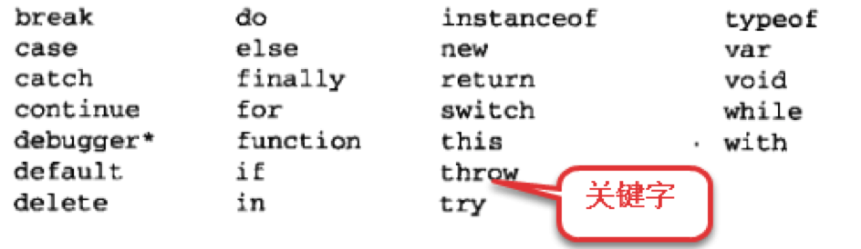

<!DOCTYPE html>
<html lang="en" xmlns="http://www.w3.org/1999/html">
<head>
    <title>JavaScript基础</title>
    <meta charset="utf-8">
    <link rel="stylesheet" type="text/css" href="css/base.css">
    <link rel="apple-touch-icon-precomposed" sizes="152x152" href="image/configImage/apple-touch-icon-precomposed-152.png">
    <link rel="shortcut icon" href="image/configImage/favicon.ico" type="image/x-icon">
</head>
<body>

    <!--主体盒子-->
    <div style="width: 100%;height: 100%;position: absolute;overflow: auto;">

        <!--左侧导航栏盒子-->
        <div class="leftNav">

            <ul>
                <li>
                    <a href="#" onclick="foldTag('foldTag1','foldTag-sign1')" class="foldClickedTag">
                        <strong>0.1.</strong>JS前言
                        <i id="foldTag-sign1">
                            <s class="foldTag-sign-s">
                                ◇
                            </s>
                        </i>
                    </a>
                    <ul id="foldTag1">
                        <li><a href="#outline"><strong>0.1.1.</strong>引言</a></li>
                        <li><a href="#historySource"><strong>0.1.2.</strong>来源</a></li>
                        <li><a href="#useDevelopment"><strong>0.1.3.</strong>用途发展史</a></li>
                        <li><a href="#ECMAScript"><strong>0.1.4.</strong>ECMAScript标准</a></li>
                    </ul>

                </li>
                <li>
                    <a href="#" onclick="foldTag('foldTag2','foldTag-sign2')" class="foldClickedTag">
                        <strong>0.2.</strong>JavaScript
                        <i id="foldTag-sign2">
                            <s class="foldTag-sign-s">
                                ◇
                            </s>
                        </i>
                    </a>
                    <ul id="foldTag2">
                        <li><a href="#JavaScript"><strong>0.2.1.</strong>JavaScript</a></li>
                        <li><a href="#location"><strong>0.2.2.</strong>书写位置</a></li>
                        <li><a href="#simpleMethod"><strong>0.2.3.</strong>输入输出方法</a></li>
                    </ul>

                </li>
                <li style="margin-top: 15px;">
                    <a href="#" onclick="foldTag('foldTag3','foldTag-sign3')" class="foldClickedTag">
                        <strong>0.3.</strong>数据类型
                        <i id="foldTag-sign3">
                            <s class="foldTag-sign-s">
                                ◇
                            </s>
                        </i>
                    </a>
                    <ul id="foldTag3">

                        <li><a href="#dataType"><strong>0.3.0.</strong>数据类型分类</a></li>
                        <li><a href="#simpleData"><strong>0.3.1.</strong>简单数据类型</a></li>
                        <ul>
                            <li><a href="#Number">number</a></li>
                            <li><a href="#String">string</a></li>
                            <li><a href="#Boolean">boolean</a></li>
                            <li><a href="#undefined">undefined</a></li>
                            <li><a href="#null">null</a></li>
                        </ul>
                        <li><a href="#complexData"><strong>0.3.2.</strong>复杂(引用)数据类型</a></li>
                        <ul>
                            <li><a href="#object">自定义对象</a></li>
                            <li>
                                <a href="#built-inObject">内置对象 :</a>
                                <ul style="padding-left: 30px;">
                                    <li><a href="#Date">Date</a></li>
                                    <li><a href="#Math">Math</a></li>
                                    <li><a href="#array">Array</a></li>
                                    <li><a href="#arguments">arguments</a></li>
                                    <li><a href="#regexp">RegExp</a></li>
                                </ul>
                            </li>
                        </ul>

                        <li><a href="#packData"><strong>0.3.3.</strong>基本包装类型</a></li>
                        <ul>
                            <li><a href="#stringpack">String</a></li>
                        </ul>
                    </ul>

                </li>
                <li>
                    <a href="#typeExchange"><strong>0.4.</strong>数据类型转换</a>
                </li>

                <li style="margin-top: 15px;">
                    <a href="#constVar"><strong>0.5.</strong>常量变量字面量</a>
                </li>

                <li>
                    <a href="#" onclick="foldTag('foldTag4','foldTag-sign4')" class="foldClickedTag">
                        <strong>0.6.</strong>运算符
                        <i id="foldTag-sign4">
                            <s class="foldTag-sign-s">
                                ◇
                            </s>
                        </i>
                    </a>
                    <ul id="foldTag4">
                        <li>
                            <a href="#one"><strong>0.6.1.</strong>单目运算符 </a>
                            <ul>
                                <li><a href="#self">自增自减</a></li>
                                <li><a href="#typeof">typeof</a></li>
                            </ul>

                        </li>
                        <li>
                            <a href="#double"><strong>0.6.2.</strong>双目运算符</a>
                            <ul>
                                <li><a href="#instanceof">Instanceof</a></li>
                                <li><a href="#sum">算术运算符</a></li>
                                <li><a href="#compare">比较运算符</a></li>
                                <li><a href="#logic">逻辑运算符</a></li>
                                <li><a href="#comma">逗号运算符</a></li>
                            </ul>
                        </li>
                        <li><a href="#triple"><strong>0.6.3.</strong>三目</a></li>
                        <li><a href="#give"><strong>0.6.4.</strong>赋值</a></li>
                    </ul>
                </li>

                <li>
                    <a href="#processControl"><strong>0.7.</strong>流程控制语句</a>
                </li>

                <li style="margin-top: 15px;">
                    <a href="#function"><strong>0.8.</strong>函数创建和调用</a>
                </li>
                <li>
                    <a href="#founctionUse"><strong>0.9.</strong>JS中函数的使用场景</a>
                </li>

                <li style="margin-top: 15px;">
                    <a href="#" onclick="foldTag('foldTag5','foldTag-sign5')" class="foldClickedTag">
                        <strong>0.10.</strong>JavaScript与OC语法比较
                        <i id="foldTag-sign5">
                            <s class="foldTag-sign-s">
                                ◇
                            </s>
                        </i>
                    </a>
                    <ul id="foldTag5">
                        <li><a href="#compareWithOC"><strong>0.10.1.</strong>编译与运行机制</a></li>
                        <li><a href="#translate"><strong>0.10.2.</strong>类型转换机制</a></li>
                        <li><a href="#var"><strong>0.10.3.</strong>定义变量</a></li>
                        <li><a href="#method"><strong>0.10.4.</strong>方法的创建与使用规则</a></li>
                        <li><a href="#obj"><strong>0.10.5.</strong>对象的创建与字面量</a></li>
                        <li><a href="#attribute"><strong>0.10.6.</strong>属性/方法(动态特性)</a></li>
                    </ul>

                </li>

                <li>
                    <a href="#errorTest"><strong>0.11.</strong>JS代码调试</a>
                </li>

                <li class="endLine">

                </li>
            </ul>

        </div>

        <!--右侧内容盒子-->
        <div class="rightContentDiv">

            <h3 id="outline">引言</h3>
            <div>
                <p class="twoemcontent">JavaScript是一种网页编程技术，其功能强大，实现简单方便，入门简单，即使是程序设计新手也可以非常快速容易地使用JavaScript进行简单的编程。</p>

                <p class="twoemcontent">JavaScript就是一种基于对象和事件驱动，并具有安全性能的脚本语言，脚本语言简单理解就是在客户端的浏览器就可以互动响应处理程序的语言，而不需要服务器的处理和响应，当然JavaScript也可以做到与服务器的交互响应，而相对的服务器语言像asp php jsp等需要将命令上传服务器，由服务器处理后回传处理结果。</p>

                <p class="twoemcontent">JavaScript可以被嵌入到HTML文件中，不需要经过Web服务器就可以对用户操作作出响应，使网页更好地与用户交互；在利用客户端个人电脑性能资源的同时，适当减小服务器端的压力，并减少用户等待时间。</p>


            </div>

            <h3 id="historySource">JavaScript的历史来源</h3>
                <div>
                    <div align="center">
                        
                    </div>

                        <p class="twoemcontent">95年，sun公司发布了java语言</p>
                        <p class="twoemcontent">1995年4月，网景公司与sun合作，并录用了34岁的系统程序员Brendan Eich（布兰登·艾奇）</p>

                        <p class="twoemcontent">其只用10天时间就把Javascript设计出来。</p>
                            <p>（1）借鉴C语言的基本语法；</p>
                            <p>（2）借鉴Java语言的数据类型和内存管理；</p>
                            <p>（3）借鉴Scheme语言，将函数提升到"第一等公民"（first class）的地位；</p>
                            <p>（4）借鉴Self语言，使用基于原型（prototype）的继承机制。</p>

                        <p class="twoemcontent">网景公司(挺屌的一家公司)：最先开发了图形化界面，然后是苹果公司从日本一家公司引进，再然后是微软(有人说是copy的当时苹果公司的)</p>
                        <p class="twoemcontent">详细的历史来源：
                            <a href="http://www.ruanyifeng.com/blog/2011/06/birth_of_javascript.html">
                                http://www.ruanyifeng.com/blog/2011/06/birth_of_javascript.html
                            </a>
                        </p>


                    <strong>JavaScript是Java的变种吗？</strong>
                    <p class="twoemcontent">JavaScript最初的确是受Java启发而开始设计的，而且设计的目的之一就是“看上去像Java”，因此语法上有很多类似之处，许多名称和命名规范也借自Java。但是实际上，JavaScript的主要设计原则源自Self和Scheme，它与Java本质上是不同的。它与Java名称上的近似，是当时网景为了营销考虑与Sun公司达成协议的结果。</p>
                    <strong>JavaScript与JScript的关系？</strong>
                    <p class="twoemcontent">在JavaScript推出之后，为了取得技术优势，微软推出了JScript來迎战JavaScript的脚本语言。为了互用性，Ecma国际（前身为欧洲计算机制造商协会）建立了ECMA-262标准（ECMAScript）。现在两者都属于ECMAScript的实现。</p>
                    <strong>JavaScript是一门简单的语言吗？</strong>
                    <p class="twoemcontent">尽管JavaScript作为给非程式人员的脚本语言，而非作为给程式人员的程式语言来推广和宣传，但是JavaScript是一门具有非常丰富特性的语言，它有着和其它程式语言一样的复杂性，或更复杂。实际上，你必须对JavaScript有这扎实的理解才能用它来撰写比较复杂的程式。</p>


                </div>

            <h3 id="useDevelopment">JavaScript的用途发展史</h3>
            <div>
                <p class="twoemcontent"><span class="redColor">2003年之前，JavaScript被认为“牛皮鲜”</span>，用来制作页面上的广告，弹窗、漂浮的广告。什么东西让人烦，什么东西就是JavaScript开发的。所以浏览器就推出了屏蔽广告功能。</p>

                <p class="twoemcontent"><span class="redColor">2004年JavaScript命运开始改变了，那一年谷歌公司，开始带头使用Ajax异步交互技术了，Ajax技术就是JavaScript的一个应用</span>。并且，那时候人们逐渐开始提升用户体验了。</p>

                <p>ajax的常见两个应用场景</p>
                <p class="sixemcontent">在搜索框内输入内容的时候，下面联想框中的内容，就是ajax请求回来的。</p>
                <p class="sixemcontent">在我们注册一些东西，提示用户名是否已经被占用</p>

                <p>原理图如下：</p>
                <div class="sixemcontent">
                    
                </div>

                <p class="twoemcontent">2010年的时候，人们更加了解HTML5技术了，<span class="redColor">HTML5推出了一个东西叫做Canvas（画布），工程师可以在Canvas上进行游戏制作，利用的就是JavaScript。</span></p>
                <div align="center">
                    
                </div>
                <p class="twoemcontent">2011年，<span class="redColor">Node.js诞生，使JavaScript能够开发服务器程序了。</span></p>

                <p class="twoemcontent">今天，JavaScript工程师是绝对的吃香，能够和iOS、Android工程师比肩，毫不逊色的。</p>

                <p class="twoemcontent">现在，公司都流行WebApp，就是用网页技术开发手机应用。什么意思呢？手机系统有iOS、安卓、windows phone。那么公司比如说开发一个“携程网”APP，就需要招聘三队人马，比如iOS工程师10人，安卓工程师10人，windows工程师10人。共30人，工资开销大。并且，如果要改版，要改3个版本。所以，现在公司，都用web技术，用html+css+javascript技术来开发app。好处是不用招聘那么多工程师，只需要几个前端开发工程师即可。并且也易于迭代，就是网页一改变，所有的终端都变了。呵呵哒。</p>
            </div>

            <h3 id="ECMAScript">ECMAScript标准</h3>
                <div>
                    <p class="twoemcontent">ECMAScript是一种由Ecma国际前身为欧洲计算机制造商协会,英文名称是European Computer Manufacturers Association，制定的标准。</p>

                    <p class="twoemcontent">JavaScript是由公司开发而成的，公司开发而成的一定是有一些问题，不便于其他的公司拓展和使用。</p>

                    <p class="twoemcontent">所以1997 年，以JavaScript 1.1 为基础。由来自 Netscape、Sun、微软、Borland 和其他一些对脚本编程感兴趣的公司的程序员组成的 TC39（ECMA的小组） 锤炼出了 ECMA-262，也就是ECMAScript1.0。</p>

                    <p class="twoemcontent"><span class="redColor">简单来说ECMAScript不是一门语言，而是一个标准。符合这个标准的比较常见的有：JavaScript、Action Script（Flash中用的语言，几年前火极一时）。</span>就是说，你JavaScript学完了，Flash中的程序也会写了。</p>

                    <p class="twoemcontent">ECMAScript在2015年6月，发布了ECMAScript 6正式版本，即ECMAScript 2015。语言的能力更强。但是，浏览器的厂商不能那么快的去追上这个标准。</p>
                </div>


            <h3 id = "JavaScript">JavaScript语言</h3>
                <div>
                    <p class="twoemcontent">js是一款运行在客户端的网页编程语言。是世界上用得最多的脚本语言。</p>

                    <table border="1" cellspacing="0" cellpadding="8" align="center">
                        <tr>
                            <td width="200">组成部分</td>
                            <td width="400"></td>
                        </tr>
                        <tr>
                            <td>ECMAScript</td>
                            <td>JavaScript的语法标准-核心，语法：怎么连词成句、怎么连句成程序</td>
                        </tr>
                        <tr>
                            <td>DOM(Document Object Model)</td>
                            <td>浏览器将网页当成一个对象，提供给JavaScript的API，用来操作网页上的元素</td>
                        </tr>
                        <tr>
                            <td>BOM(Browser Object Model)</td>
                            <td>JavaScript操作浏览器的部分功能的一个模块的API</td>
                        </tr>
                        <tr>
                            <td colspan="2">其实：DOM和BOM也可以算是ECMAScript中object的一部分，但是太重要就摘出来，重点来讲
                            </td>
                        </tr>
                    </table>

                    <p class="twoemcontent"><span class="redColor">js是一门基于对象、解释型、弱语言类型的脚本语言</span></p>

                    <strong>基于对象</strong>
                        <p>基于对象：只有封装，因为没有类的概念，所以不能体现出继承、多态的特点</p>
                        <p>面向对象：针对面向过程，封装了很多的对象，简单许多</p>
                        <p class="sixemcontent">面向过程：C是面向过程的，很多东西都是自己动手来做，直接面向封装的过程</p>

                    <strong>解释执行</strong>
                        <p>被浏览器的JS引擎直接执行，一行一行解析，解析一行执行一行(运行一次解释一次)</p>
                        <p class="sixemcontent">编译执行：java、c#、OC，把代码编译成CPU认识的文件，然后浏览器整体执行（编译一次就够）</p>

                    <strong>弱语言类型</strong>
                        <p>简单理解：定义一个变量，定义的时候不用声明变量类型，而且在作用域内，可以被赋值其他数据类型。</p>
                    <strong>脚本语言</strong>
                    <p>脚本语言：<span class="redColor">弥补编译语言的不足而存在的</span>，作为补充语言，不用编译。当然，现在js已经慢慢地成熟为可以单独存在了。但还是归类于脚本语言。</p>

                    <strong>特点</strong>
                          <p>简单易用</p>


                    <strong>作用</strong>
                        <p>表单验证</p>
                        <p>页面特性(比如：轮播。PC端的网页效果)</p>
                        <p>移动端(移动web和app)</p>
                        <p>Ajax(异步和服务器交互)</p>
                        <p>服务端开发(node.js)</p>
                        <p>算法开发游戏</p>
                    <p class="twoemcontent">可参考链接：<a target="_blank" href="https://segmentfault.com/a/1190000003767058">https://segmentfault.com/a/1190000003767058</a> </p>
                    <br>
                    <p class="twoemcontent">这里添加一个JS后端的发展历史</p>
                        <p>2009年2月，Ryan Dahl 在博客上宣布准备基于 V8 创建一个轻量级的 Web 服务器并提供一套库。</p>
                        <p>2009年5月，Ryan Dahl 在 GitHub 上发布了最初版本的部分 Node.js 包，随后几个月里，有人开始使用 Node.js 开发应用。</p>
                        <p>2009年11月和2010年4月，两届 JSConf 大会都安排了 Node.js 的讲座。</p>
                        <p>2010年年底，Node.js 获得云计算服务商 Joyent 资助，创始人 Ryan Dahl 加入 Joyent 全职负责 Node.js 的发展。</p>
                        <p>2011年7月，Node.js 在微软的支持下发布 Windows 版本</p>
                </div>


            <h3 id="location">Js书写位置</h3>
                <div>
                    <p class="twoemcontent">内嵌式</p>
                    <div class="bgcontent">
                        <p>&lt;script type="text/javascript"&gt;</p>
                        <p class="sixemcontent">    alert("js调用");</p>
                        <p>&lt;/script&gt;</p>
                    </div>

                    <p class="twoemcontent">外链式 (标签里面不能再写JS代码)</p>
                    <p>1.先创建一个外部JS文件</p>
                    <p>2.通过src将外部js调用。</p>
                    <p><span class="bgcontent">&lt;script src="1.js"&gt;&lt;/script&gt;</span></p>

                    <p class="twoemcontent">行内式</p>
                    <p><span class="bgcontent">&lt;div onclick = "alert("xxx")"&gt;你好&lt;/div&gt;</span></p>
                    <p><span class="bgcontent">&lt;div onclick = "fn();"&gt;你好&lt;/div&gt;</span></p>


                    <strong>注意：</strong><br>
                    <strong>Ⅰ</strong>
                    <p class="twoemcontent">内嵌/外链式的书写位置</p>
                        <p>1. 写在&lt;head>&lt;/head>中</p>
                        <p>2. 写在&lt;body>&lt;/body>中(注意：写在&lt;/html>后面，真正在执行的时候，会被提到body中。所以推荐写在body中)，推荐放在&lt;/body>的紧贴的上面</p>
                    <strong>Ⅱ</strong>
                    <p class="twoemcontent">如果内嵌式写在head中，写DOM的时候，一系列代码建议写在window.onload方法里，这个方法是等到界面元素加载完成之后再调用，避免操作的元素还没加载出来，导致获取元素为空，而崩溃。</p>

                    <strong>Ⅲ</strong>
                    <p class="twoemcontent">DOM中有个例外，如果是上面行内式绑定的第二种方法，那么：</p>
                        <p>1. &lt;script>标签里需要保证fn()这个方法是全局变量，不能写在window.onload里了。</p>
                        <p>2. 这种方式绑定&lt;script>中的方法，被绑定方法里的this就不是该标签了，而是window。</p>
                            <p class="sixemcontent">此时如果想在方法中使用this，就应该这么写：<span class="bgcontent">&lt;div onclick = "fn(this);"&gt;你好&lt;/div&gt;</span></p>


                    <strong>语法：</strong>
                    <p>写js代码的时候，如果是代码是一行行分行写的话，分号可写可不写。如果没有分号也没有回车换行，那么编译器就编译不了，识别不了那一行代码</p>


                    <strong>编译：</strong>
                    <p>sublime代码编辑器，没有语法报错提示</p>

                    <strong>注释：</strong>
                    <p>同iOS，有单行、多行、文本注释</p>

                    <strong>执行：</strong>
                    <p>html页面中出现&lt;script&gt;标签后，就会让页面暂停等待脚本的解析和执行。无论当前脚本是内嵌式还是外链式，页面的下载和渲染都必须停下来等待脚本的执行完成才能继续，这在页面的生命周期中是必须的。</p>
                    <p class="redColor">在javascript中，程序执行的过程是从上而下的顺序执行。遇到错误，不会再往下执行。</p>
                    <p><span class="bgcontent">比如:console.log(你好)，这个时候在控制台console中就会报错：你好 is not found; 因为 你好没有被单引号或者双引号包括，编译器是当成变量来看待的（虽然是汉字的~）</span></p>

                    <strong>总结：</strong>
                    <p>推荐将JS代码写在html结束标签后边(最后执行不堵塞)</p>
                    <p>将多个JS文件合成为一个JS文件，类似精灵图(跟图片一样，都是要走URL请求的)。(节约加载时间)</p>
                </div>

            <h3 id="simpleMethod">输入输出方法</h3>
                <div>
                    <h4>输入方法</h4>

                    <p class="twoemcontent"><span class="bgcontent"> alert() </span> </p>
                    <p>在页面弹出一个对话框，早期JS调试使用。返回值是undefined</p>
                    <br>
                    <p class="twoemcontent"><span class="bgcontent">Confirm()</span> </p>
                    <p>在页面弹出一个对话框, 常配合if判断使用。比alert多了个取消按钮。返回值：点确定是true，点取消是false</p>
                    <br>
                    <p class="twoemcontent"><span class="bgcontent">console.log()</span>  </p>
                    <p>将信息输入到控制台，用于js调试。</p>
                    <p>Console.error(“xx”)  在控制台打印:一个红色❌+内容</p>
                    <p>Console.warn(“”) 在控制台打印:⚠警告符号+内容</p>
                    <p style="font-weight: 500">console.log() 是十分消耗性能的 所以 该方法 只会出现在 测试的时候,项目上线了 会出掉 console.log()</p>

                    <br>
                    <p class="twoemcontent"><span class="bgcontent">document.write()</span></p>
                    <p>在页面输出消息，document.write不仅能输出信息，还能输出标签。</p>
                    <p>比如：<span class="bgcontent">document.write("我&lt;br&gt;你")</span></p>
                    <p class="twoemcontent">另一用途：</p>
                    <p>document.write(“&lt;br/&gt;”)，在body中会显示换行效果。</p>
                    <p>document.write(“&lt;table border=“1”&gt;”); document.write(“&lt;/table&gt;”)。会打印出来一个表格</p>
                    <p>当table内容很多的时候，我们甚至可以使用for循环，结合上面的document.write()，将表格内容打印出来。</p>

                    <h4>输出方法</h4>
                    <p class="twoemcontent"><span class="bgcontent">prompt()</span></p>
                    <p>弹出对话框，用于接收用户输入的信息。类似scanf。</p>
                    <p>返回值是string类型的</p>
                </div>


            <h3 id="dataType">数据类型分类</h3>
            <div>
                <p class="twoemcontent">从语言基础的C语言，继承角度来说。讲js的数据类型</p>
                    <p>	基本类型：</p>
                    <p class="sixemcontent">数值类型没了，现在都是Number类型，应该算是Number对象了</p>
                    <p class="sixemcontent">字符类型：String</p>
                    <p class="sixemcontent">布尔类型：Boolean</p>
                    <p class="sixemcontent">有内存没初始化：Undefined (是Undefined数据类型)</p>
                    <p class="sixemcontent">内存为空：null  (null是object数据类型的)</p>
                    <p>	构造类型：</p>
                    <p class="sixemcontent">数组：Array</p>
                    <p class="sixemcontent">结构体</p>
                    <p class="sixemcontent">枚举(作为关键字保留，目前好像没有)</p>
                    <p class="sixemcontent">字典(字面量与对象字面量差不多一样了，所以字典没了)</p>
                    <p>	对象类型(C中的指针类型)：</p>
                    <p class="sixemcontent">系统原生功能类对象：Date、Math</p>
                <br>
                <p class="twoemcontent">从js本身角度分类：</p>

                    <p class="twoemcontent">ECMAScript变量包含两种不同类型的值：基本类型值、引用类型值；</p>
                <strong>基本类型值(又叫简单数据类型)：</strong>
                    <p class="sixemcontent"> 指的是保存在栈内存中的简单数据：Number、String、Boolean、Null、Undefined</p>
                <strong>引用类型值(又叫复杂数据类型)：</strong>
                        <p>指的是那些保存在堆内存中的对象，意思是，变量中保存的实际上只是一个指针，这个指针指向内存堆中实际的值；</p>
                        <p>都是object，分类为：</p>
                        <p class="sixemcontent">内置对象：Date、Math、Array、Function等.</p>
                        <p class="sixemcontent">自定义对象：自定义构造函数(仿类)</p>
                <strong>包装基本类型-属于引用类型</strong>
                        <p class="sixemcontent">因为基本数据类型是没有属性和方法的，所以为了方便操作基本数据类型，JavaScript还提供了三个特殊的引用类型：String/Number/Boolean</p>
                <strong>访问</strong><br>
                        基本类型值：按值访问，操作的是他们实际保存在栈里的值，值传递，不影响原本的变量。<br>
                        引用类型值：按引用访问，当查询时，我们需要先从栈中读取内存地址，然后再顺藤摸瓜地找到保存在堆内存中的值，操作之后其它指向这里的变量，然后数值自然也就变了

            </div>

                <h3 id="simpleData">简单数据类型</h3>

                    <h4 id="Number">数字类型-Number</h4>
                        <div>
                        <p class="twoemcontent">最基本的数据类型</p>
                        <p class="twoemcontent">是没有int和float数据类型之分的，全是number对象。</p>
                        <p>     不区分整型数值和浮点型数值，即：包含正数，负数，小数</p>

                            <strong>数值范围</strong>
                        <p class="twoemcontent">js弱语言类型，表达的数值范围也小了</p>
                        <p>     能表示的最大值是±1.7976931348623157乘以10的308次方。</p>
                        <p>     能表示的最小值是±5 乘以10的-324次方</p>

                            <strong>浮点数</strong>
                            <p class="twoemcontent">因为精度丢失问题，所以不要判断计算后的两个浮点数是否相等。</p>
                            <p>比如不要比较0.1+0.2 == 0.3 是不成立的~</p>
                            <p>console.log(0.1+0.2)，结果并不是0.3~</p>

                            <strong>进制</strong>
                        <p class="twoemcontent">数字类型表达方式</p>
                        <p>      十进制</p>
                        <p class="sixemcontent"> <span class="bgcontent">var n = 123;</span></p>
                        <p>     八进制</p>
                        <p class="sixemcontent"> 直接以数字0开始，有0-7之间的数字组成。</p>
                        <p class="sixemcontent"> <span class="bgcontent">var n = 0341;</span></p>
                        <p>     十六进制</p>
                        <p class="sixemcontent"> 以 0x开头 0到9之间的数字，a(A)-f(F)之间字母构成。 a-f对应的数字是10-15</p>
                        <p class="sixemcontent"> <span class="bgcontent">var n =  0x12ad1;</span></p>
                        <p class="twoemcontent"> 向设备，硬件里面写数据的时候可能会用到十六进制或者八进制，工作中很少用到</p>

                            <strong>进制转换</strong>
                            <p class="twoemcontent">parseInt 后面一个参数，是取整，后面两个参数是：任意进制转十进制</p>
                                <p>parseInt ( 111 , 2)  = 7  // 二进制的111，转为十进制</p>
                            <p class="twoemcontent">toString()  无参数，是转换成字符串，有参数是：十进制转任意进制</p>
                                <p>10.toString(16)  = a;  // 十进制的10，转为十六进制</p>


                            <strong>NaN</strong>
                            <p class="twoemcontent">number类型有个特殊值：NaN(not a number，但是它是number类型的)。</p>
                             <p><span class="redColor">undefined和任何数值计算结果都为NaN</span></p>
                             <p><span class="redColor">NaN与任何值都不相等，包括NaN本身</span></p>

                             <p class="twoemcontent">isNaN()：任何不能被转换为数值的值都会导致这个函数返回 true</p>
                     </div>

                    <h4 id="String">字符串-String</h4>
                        <div>
                        <p class="twoemcontent">凡是用双引号或者单引号引起的都是字符串。</p>

                            <strong>字符串的不可变性</strong>
                            <p class="twoemcontent">"abc"  这个表达方式，本身做了两件事：</p>
                            <p>1. 开辟内存</p>
                            <p>2. 将abc这个值存到这块内存中。</p>
                            <p class="twoemcontent">这个内存和这个值是绑定的。</p>
                            <p class="twoemcontent">你可以不用这块内存这个值，但是你不能修改这个内存中的abc字符内容。不知道js中有没有可变字符串这个概念。</p>
                            <p class="twoemcontent">在内存中不会立刻消失，只能二次赋值，原有的字符在一定时间内被垃圾回收器回收。</p>

                            <strong>字符串是可以用 += 符号的</strong>
                            <p>js中是取不到变量内存地址的，但是根据字符串的不可变特性，个人觉得：字符串 += 的时候，是另外又开辟了一片空间，存储这个新的字符串</p>


                            <strong>字符转义</strong>
                            <p class="twoemcontent">字符串中，经常有一些符号需要我们转义之后才能正常输出。</p>
                            <p>"abcd'abb'abcd" 里面这个单引号不用转义</p>


                        <table cellpadding="5" cellspacing="0" border="1" width="300" align="center">
                            <thead>
                            <tr>
                                <td colspan="2">字符串中的转义</td>
                            </tr>
                            </thead>

                            <tbody>
                            <tr>
                                <td>\'    </td>
                                <td>单引号</td>
                            </tr>
                            <tr>
                                <td>\"    </td>
                                <td>双引号 </td>
                            </tr>
                            <tr>
                                <td>\\    </td>
                                <td>反斜杠</td>
                            </tr>
                            <tr>
                                <td>\r     </td>
                                <td>回车 </td>
                            </tr>
                            <tr>
                                <td>\n    </td>
                                <td>换行</td>
                            </tr>
                            </tbody>
                        </table>
                    </div>

                    <h4 id="Boolean">布尔类型-Boolean</h4>
                        <div>
                            <p class="twoemcontent">只有2个值一个是true, 一个是false(区分大小写，大写不对).   实际运算中true=1,false=0</p>
                            <p class="twoemcontent">大部分与比较运算符结合使用</p>

                            <p class="twoemcontent">虽然Boolean 类型的字面值只有两个，但 ECMAScript 中所有类型的值都可以转换为Boolean类型</p>

                            <p>非0非NaN的number，非空String、true、undefined、非空对象为true</p>
                            <p>0 、NaN、“”、false、undefined 、null为false</p>

                            <strong>Boolean的隐式类型转换</strong>
                            <p class="twoemcontent">在我们需要填入布尔值的时候，如果我们填入一个非布尔值，那么编译器，会自动帮我们转换为布尔值。<span class="redColor">OC也这样</span></p>
                            <p>比如：我们在if()的时候，这里我们传入任何数值，编译器会帮我们转换为Boolean类型</p>
                        </div>

                    <h4 id="undefined">Undefined数据类型</h4>
                        <div>
                        <p class="twoemcontent">开辟了内存，变量未初始化，类似iOS中[NSNull null]</p>
                            <p class="twoemcontent">Undefined数据类型，就一个值，undefined(打印值是它，typeof也是它)，这一点也同[NSNull null]，也就这一个值</p>
                        <p class="twoemcontent">定义了变量，没有给变量赋值。是undefined数据类型的</p>
                        <p><span class="bgcontent">var n;</span>，此时n的数据类型就是undefined.</p>
                    </div>

                    <h4 id="null">null关键字</h4>
                        <div>
                            <p class="twoemcontent">内存中不存在，类似于iOS中的nil</p>
                            <p class="twoemcontent">null这是js中的一个关键字，表示一个特殊值，通常用来描述"空值"。并不是个数据类型。</p>
                            <p class="twoemcontent"><span class="redColor">null是object数据类型的</span>：<span class="bgcontent"> var n = null;</span></p>

                            <strong>undefined和null</strong>

                            <p>
                            <p class="twoemcontent">null和undefined有最大的相似性。看看null == undefined的结果(true)也就更加能说明这点。但是null ===undefined的结果(false)。不过相似归相似，还是有区别的，就是和数字运算时，10 + null结果为：10；10 + undefined结果为：NaN。</p>
                            <p class="twoemcontent redColor">任何数据类型和undefined运算都是NaN;</p>
                            <p class="twoemcontent redColor">任何值和null运算，null可看做0运算。</p>
                            </p>
                        </div>

                <h3 id="complexData">复杂数据类型</h3>
                    <div>
                        <p class="twoemcontent">又叫引用类型。可以说复杂数据类型都是object。方法虽然打印typeof是function类型，但是归根结底还是object类型。
                        object分为内置对象和自定义对象，内置对象有：Date、Math、Array、RegExp(正则)、Error等</p>
                    </div>

                    <h3 id="object">自定义对象-object</h3>
                        <div>
                            <dl style="margin-left: 2em">
                                <dt>对象知识点目录</dt>
                                <dd>JS对象</dd>
                                <dd>对象创建</dd>
                                <dd>构造函数</dd>
                                <dd>This思想</dd>
                                <dd>对象字面量</dd>
                                <dd>对象的遍历取值</dd>
                                <dd>JSON详解</dd>
                            </dl>

                            <strong>JS对象 -- <span class="redColor">完全可以参考OC可变字典来学，定义和使用</span></strong>
                                <div>
                                    <p class="twoemcontent">面向对象和基于对象</p>
                                        <p>面向对象：可以创建自定义的类型、很好的支持继承和多态。面向对象的语言c++/java/c#...</p>
                                    	        <p class="sixemcontent">面向对象的特征：封装、继承、多态</p>
                                    	        <p class="sixemcontent">万物皆对象：世间的一切事物都可以用对象来描述</p>
                                    	<p>基于对象：无法创建自定义的类型、不能很好的支持继承和多态。基于对象的语言JavaScript</p>

                                    <p><span class="redColor">JS中没有类，所以正常创建对象的步骤是：自已定义一个构造函数，然后创建对象。(面向对象的语言里，创建了类，就自带构造函数了)</span></p>

                                    <p class="twoemcontent">JavaScript中的对象：无序属性的集合</p>
                                    <p class="twoemcontent">JS的对象与iOS的字典的比较：</p>
                                        <p>相同点</p>
                                            <p class="sixemcontent">1.同是无序属性的集合</p>
                                            <p class="sixemcontent">2.字面量都是键值对</p>
                                            <p class="sixemcontent">3.由于没有类概念，所以JS的对象可以跟可变型字典一样，键(属性)随时需要随时加</p>
                                        <p>不同点:</p>
                                            <p class="sixemcontent">1.字典只能通过[ ]取值赋值，js对象可以[ ]，也可以通过点.</p>
                                            <p class="sixemcontent">2.字典的值只能是对象，js对象的值什么数据类型都行(基本类型、对象、函数)。</p>

                                </div>

                            <strong>对象创建</strong>
                                <div>
                                    <p class="twoemcontent">1.创建空白对象</p>
                                        <div class="bgcontent">
                                            <p class="twoemcontent">var  obj  =  new  Object();</p>
                                            <p class="twoemcontent">//然后直接</p>
                                            <p class="twoemcontent">obj.name = “”; // 或者this["name"] = name</p>
                                            <p class="twoemcontent">obj.say = function (){ … }</p>
                                        </div>
                                    <p class="twoemcontent">2.通过构造函数创建类似OC的类对象</p>
                                    <div class="bgcontent">
                                        <p class="twoemcontent">function People(name) {</p>
                                            <p>this.name = name; // 或者this["name"] = name</p>
                                            <p>this.say = function () { xxxxx } ;</p>
                                        <p class="twoemcontent">}</p>
                                        <p class="twoemcontent">new pel = new People(“zhagnsan”,”..”); 在构造函数里赋值</p>
                                    </div>

                                    <p class="twoemcontent">3.对象的字面值，与字典一模一样，所以在js中是没有字典这个说法的，写了{ }，里面写键值对，就是创建了一个对象。所以对象同字典一样，也有创建的快捷格式：</p>

                                    <p><span class="bgcontent">var  对象 = { } ； // 创建了一个对象。</span></p>

                                    <br>
                                    <p class="twoemcontent">JS不管是通过new object还是通过构造方法创建的，打印typeof都是object数据类型的，不能创建自己想要的类。OC对象的typeof是各自的类名。</p>

                                    <p>通过构造方法创建的对象，虽然typeof是object，但是如果用下面的方法：pop instance People, 是true</p>

                                    <p><span class="bgcontent">只要通过new创建的都是object类型</span></p>


                                    <p><span class="redColor">JS中没有类，所以正常创建对象的步骤是：自已定义一个构造函数，然后创建对象(仿类)，OC是创建了类，自动生成init构造函数。</span></p>
                                </div>

                            <strong>构造函数</strong>
                                <div>
                                    <p class="twoemcontent redColor">构造函数(有了构造函数，对象的创建，就很像面向对象了)</p>
                                        <p>new后面调用的函数，我们称为构造函数。</p>
                                        <p>Object() 我们把他视为一个构造函数，创造出来的是一个空白对象。</p>
                                        <p>构造函数的本质就是一个函数，只不过构造函数的目的是为了创建新实例对象，为新对象进行初始化(设置对象的属性)</p>

                                    <p class="twoemcontent">格式：</p>
                                        <div class="bgcontent">
                                            <p class="twoemcontent">function People(name) {</p>
                                                <p>this.name = name;</p>
                                                <p>this.say = function ( ) { xxxxx } ;</p>
                                            <p class="twoemcontent">}</p>
                                        </div>

                                        <p>1.默认函数首字母大写</p>
                                        <p>2.构造函数并没有显示返回任何东西。默认就是：new 操作符会自动创建给定的类型并返回他们，当调用构造函数时，new会自动创建this对象，且类型就是构造函数类型。</p>
                                        <p>3.也可以在构造函数中显示调用return.如果返回的值是一个对象，它会代替新创建的对象实例返回。如果返回的值是一个原始类型，它会被忽略，新创建的实例会被返回。 </p>

                                    <p class="twoemcontent">然后我们<span class="bgcontent">var peol = new Person("zs",fn( ));</span>就创建了一Person个对象</p>
                                        <p>发生了下面四件事情</p>
                                            <p class="sixemcontent">1 new开辟新的存储空间，存储新创建的空对象</p>
                                            <p class="sixemcontent">2 将构造函数的作用域赋给新对象,所以this = person</p>
                                            <p class="sixemcontent">3 执行构造函数，为对象设置属性</p>
                                            <p class="sixemcontent">4 返回新创建的对象</p>
                                </div>
                            <strong>注意：</strong>
                                <p>在OC中，一个类只能取到自己的对象属性，在JS中，所有的变量都能.取到所有属性，不管它是什么类型的对象.</p>
                                <p>在OC中，我们给系统类增加属性，要创建拓展，而JS中，我们可以随意给系统的元素节点，增加任何我们想要的属性。</p>


                            <strong>This思想</strong>
                                <div>
                                    <br>
                                    <span class="redColor">this只出现在函数中，谁调用函数，this就指的是谁。</span>
                                        <p class="twoemcontent">1.构造函数里的this代指被创建的实例对象</p>
                                        <div class="bgcontent">
                                            <p class="twoemcontent">function People(name) {</p>
                                                <p>this.name = name;</p>
                                                <p>this.say = function () { xxxxx } ; // this代指这个被创建的实例对象</p>
                                            <p class="twoemcontent">}</p>
                                        </div>

                                        <p class="twoemcontent">2.对象调用自己的对象方法，里面的this，代指调用方法的对象</p>
                                            <p><span class="bgcontent">p1.sayHi(); //sayHi()中的this，是p1，此时是p1调用sayHi()</span></p>

                                        <p class="twoemcontent">3.给标签绑定事件时，事件驱动方法里的this代指该标签(行内式绑定例外，this是window。实质：是行内-->找到window调用的)</p>
                                        <p><span class="bgcontent">divv.onclick = fn(){….}  //方法里的this是指divv，再说一遍，行内是例外。</span></p>

                                        <p class="twoemcontent">4.其他的方法中，this一般指window</p>
                                            <div class="bgcontent">
                                                <p class="twoemcontent">function test() {</p>
                                                    <p>console.log(this);</p>
                                                <p class="twoemcontent">}</p>
                                                <p class="twoemcontent">test();  //window.test();</p>
                                                <p class="twoemcontent">//这种定义的方法里的this是window，实际是window调用test()</p>
                                            </div>


                                </div>

                            <strong>对象字面量</strong>
                                <div>
                                    <p class="twoemcontent">对象字面量</p>
                                        <p><span class="bgcontent">var obj = { name = "zhangsan", "age" = 20 }；</span></p>
                                        <p style="font-weight: 600">键到底是个什么类型？</p>
                                            <p class="sixemcontent"><span class="redColor">不管键带不带引号，利用for in来遍历对象的时候，打印typeof key，都是string类型的</span>，所以，在我们定义、取值的时候，如果键值不是字符串，编译器内部应该是帮我们封装成了字符串。</p>
                                        <p style="font-weight: 600">用键取值</p>
                                            <p class="sixemcontent">不管键是不是带引号，obj[name]、obj[“name”]都能取出”zhangsan”</p>
                                        <p style="font-weight: 600">键的命名规则</p>
                                            <p class="sixemcontent">键不带引号的时候，命名是与变量的命名规则差不多，是有避讳的，但可以是纯数字也可以。</p>

                                    <br>
                                    <p class="twoemcontent">对象的字面量</p>
                                        <p>比JSON：</p>
                                            <p class="sixemcontent">JSON的键必须带引号，对象的字面量，键引号可加可不加，系统内部会做处理</p>
                                        <p>比iOS的字典：</p>
                                            <p class="sixemcontent">字典的键、值必须是NSObject对象(都可以是自定义对象，不过键很少设置为对象的，一般是字符串).</p>
                                        <p class="redColor">JS的对象，键算个字符串，值可以是任何数据类型</p>
                                    <p class="twoemcontent">所以：</p>
                                        <p>JSON数据，可以赋值给对象，作为字面量。但是对象的字面量不一定是JSON</p>
                                        <p>在JS中定义JSON = 通过字面量定义了JS的一个对象</p>
                                        <p>(当键值都是NSObject类型的格式，就= iOS的字典，所以JS中是没有字典的，字典就是JS对象某种特定格式字面量)</p>

                                    <strong>与OC的差异</strong>
                                    <p>oc对象字面量是&lt;类名: 存储地址></p>
                                    <p>js对象字面量是个json</p>
                                    <p class="redColor">对象的这个字面量有个好处就是：在我们做数据传输的时候，OC里面为了属性的存取简单，还需要中间转model对象，而JS就是现成的对象，可以直接用点语法来获取赋值</p>

                                </div>

                            <strong>对象的遍历取值</strong>
                                <div>
                                    <br>
                                    <span>For...in...遍历对象(或者说JSON)(不推荐遍历数组，遍历数组的时候，会把我们给数组添加的一些属性也打印出来)</span>
                                    <div class="bgcontent">
                                        <p>var json = {“aaa”: 1,“bbb”: 2,“ccc”: 3,“ddd”: 4}</p>
                                        <p>for(var key in json){</p>
                                        <p class="sixemcontent">json[key];代表1,2,3....等</p>
                                        <p>}</p>
                                         <p>//这里只能写json[key]，不能写json.key。后者表示的是，取对象json中”key”属性对象的值。前者表示的是取key表示的字面量(aaa,bbb,ccc)对应的值。</p>
                                    </div>


                                </div>

                            <strong>JSON详解</strong>
                                <div>
                                    <p class="twoemcontent">JSON(JavaScript Object Notation, JS 对象标记) 是一种轻量级的数据交换格式。它基于 ECMAScript 规范的一个子集，采用完全独立于编程语言的文本格式来存储和表示数据。简洁和清晰的层次结构使得 JSON 成为理想的数据交换语言。 易于人阅读和编写，同时也易于机器解析和生成，并有效地提升网络传输效率。</p>
                                    <p class="twoemcontent">Json组成</p>
                                        <p>Var json = {“aaa”: 1,“bbb”: 2,“ccc”: 3,“ddd”: 4}</p>
                                        <p>Json由{}和key:value以及逗号组成，三部分。（只有一个键值对key:value时,可以没有逗号）</p>
                                    <p class="twoemcontent">JSON.parse() // 参数是字符串</p>
                                        <p>把JSON形式的字符串解析成对象</p>
                                        <p>如果传递的参数不是标准的JSON格式的字符串，parse()会出错</p>


                                </div>

                            <strong>对象另一奇葩用法 -- 封装工具方法</strong>

                            <p class="twoemcontent">oc封装工具类</p>
                            <p>创建类</p>
                            <p>在类里创建方法</p>
                            <p>创建类对象，调用方法</p>

                            <p class="twoemcontent">js</p>
                            <p>创建对象</p>
                            <p>对象一个键，对应我们封装的方法，用的时候直接取方法出来用</p>
                            <div class="bgcontent">
                                <p class="twoemcontent">EventListen = {   // (var EventListen，var可以省略)</p>
                                <p>addEvent: function (ele,fn,str) {</p>
                                <p class="sixemcontent">code....</p>
                                <p>}</p>
                                <p class="twoemcontent">}</p>
                                <br>
                                <p class="twoemcontent">EventListen.addEvent(ele,fn,str)  //调用</p>
                            </div>

                        </div>

                    <h3 id="built-inObject">内置对象</h3>
                        <div>
                            <strong>内置对象</strong>

                            <p class="twoemcontent">内置对象：js本身帮我们写好的对象(就是oc中的系统原生类)，我们直接创建对象就能用的，不需要定义这个类。</p>
                                <p>比如：Date、Array、Math、RegExp(正则)、Error、String等</p>
                            <p class="twoemcontent">我们学习内置对象就是学习它们的属性和方法(内置对象的方法，叫API(一些预先定义的函数))</p>

                            <p class="twoemcontent">自学:</p>
                                <p>W3C	（前端标准W3CSchool）</p>
                                <p>MDN  （开发者网站）https://developer.mozilla.org/zh-CN/，很全很强大。(网页里面可以选择浏览语言的)</p>
                                <p>百度/谷歌/搜狗。。。</p>

                        </div>


                        <h4 id="Date">Date-时间对象</h4>
                        <div>
                            <p class="twoemcontent">Date:时间对象，几乎所有与时间相关的都封装在这个对象里</p>
                            <strong>创建Date对象的四种方法</strong>
                            <div class="bgcontent">
                                <p class="twoemcontent">//第一种：获取当前时间的Date对象</p>
                                <p class="twoemcontent">var date1 = new Date(); //UTC 国际协调时间</p>
                                <br>
                                <p class="twoemcontent">//第二种：获取指定时间的Date对象</p>
                                <p class="twoemcontent">var date2 = new Date("2016/09/06 00:00:00"); //建议写这个格式，写2016-09-06有时候会不识别</p>
                                <br>
                                <p class="twoemcontent">//后两种兼容性不好，不推荐使用</p>
                                <p class="twoemcontent">//第三种</p>
                                <p class="twoemcontent">var date3 = new Date('Wed Jan 27 2016 12:00:00 GMT+0800 (中国标准时间)');</p>
                                <br>
                                <p class="twoemcontent">//第四种</p>
                                <p class="twoemcontent">var date4 = new Date(2016, 1, 27);</p>
                            </div>

                            <strong>获取当前时间距1970.1.1的毫秒值</strong>

                            <div class="bgcontent">
                                <p class="twoemcontent">var TimeNum1 =  Date.now( );    //HTML5，IE9+，类方法</p>
                                <p class="twoemcontent">var TimeNum2 =  +new Date( );</p>
                                <p class="twoemcontent">var TimeNum3 =  new Date( ).getTime( ); //对象方法</p>
                                <p class="twoemcontent">var TimeNum4 =  new Date( ).valueOf( ); //对象方法</p>
                            </div>

                            <p class="twoemcontent">之所以选择1970年1月1作为时间基准点，是因为当时开发C语言时，电脑系统限制，如果不自定义基准点，那么时间就最多表示到2030年左右。</p>
                                <p class="twoemcontent">后来的语言继续延续这个。</p>
                                <p class="twoemcontent">当然，现在的电脑系统技术完全不用担心时间显示问题</p>

                            <br>
                            <br>
                            <p class="twoemcontent">下面列举了几个常用的对象方法</p>
                            <table border="1" cellpadding="5" cellspacing="0" align="center">
                                <thead>
                                <tr>
                                    <th>方法</th>
                                    <th>描述</th>
                                </tr>
                                </thead>
                                <tbody>
                                <tr>
                                    <td>Date.parse("2005-10-1")</td>
                                    <td>转为毫秒形式，必须是这个格式，否则返回NaN</td>
                                </tr>
                                <tr>
                                    <td>getFullYear()</td>
                                    <td>返回年</td>
                                </tr>
                                <tr>
                                    <td>getMonth()	</td>
                                    <td>返回月份（以数组形式存储 返回0到11）</td>
                                </tr>
                                <tr>
                                    <td>getDate()	</td>
                                    <td>返回一个月中的某一天</td>
                                </tr>
                                <tr>
                                    <td>getHours()	</td>
                                    <td>返回小时部分</td>
                                </tr>
                                <tr>
                                    <td>getMinutes()	</td>
                                    <td>返回分钟部分</td>
                                </tr>
                                <tr>
                                    <td>getSeconds()	</td>
                                    <td>返回秒数</td>
                                </tr>
                                <tr>
                                    <td>getDay()	</td>
                                    <td>返回一周中的某一天（返回值是 0（周日） 到 6（周六） 之间的一个整数。）</td>
                                </tr>
                                </tbody>
                            </table>


                            <p class="twoemcontent">由 getYear() 返回的值不总是 4 位的数字！对于介于 1900 与 1999 之间的年份，getYear() 方法仅返回两位数字。对于 1900 之前或 1999 之后的年份，则返回 4 位数字！</p>
                            <p class="twoemcontent">从 ECMAScript v3 开始，JavaScript 的实现就不再使用该方法，而使用 getFullYear() 方法取而代之！</p>
                        </div>


                        <h4 id="Math">Math-数学运算方法对象</h4>
                        <div>
                            <p class="twoemcontent">Math类中封装了许多数学运算中的方法</p>
                            <p class="twoemcontent">都是类方法，直接用Math调用即可</p>
                            <p class="twoemcontent">语法：</p>
                                <p><span class="bgcontent">var theCeil = Math.ceil(x);</span></p>

                            <table border="1" cellpadding="5" cellspacing="0" align="center">
                                <thead>
                                <tr>
                                    <th>方法</th>
                                    <th>描述</th>
                                </tr>
                                </thead>
                                <tbody>
                                <tr>
                                    <td>ceil(x)	</td>
                                    <td>对数进行上舍入（天花板函数），大于等于x，并且与它最接近的整数。</td>
                                </tr>
                                <tr>
                                    <td>floor(x)</td>
                                    <td>对数进行下舍入（地板函数），小于等于x，并且与它最接近的整数。</td>
                                </tr>
                                <tr>
                                    <td>max(x,y)</td>
                                    <td>返回x,y最大值</td>
                                </tr>
                                <tr>
                                    <td>min(x,y)</td>
                                    <td>返回x,y最小值</td>
                                </tr>
                                <tr>
                                    <td>pow(x,y)</td>
                                    <td>返回x  的 y 次方</td>
                                </tr>
                                <tr>
                                    <td>random()</td>
                                    <td>返回0-1之间的随机数</td>
                                </tr>
                                <tr>
                                    <td>round(x)</td>
                                    <td>四舍五入</td>
                                </tr>
                                </tbody>
                            </table>
                            <p class="twoemcontent">还有许多，点击链接：<a href="image/math.png">image/math.png</a></p>
                        </div>

                        <h4 id="array">Array-数组</h4>
                            <div>
                                <strong>概念</strong>
                                <p class="twoemcontent">数组存储的数据可以是任何类型（数字、字符、布尔值等），iOS中只能存对象</p>

                                <p>数据是有序的，可以存放任意类型的数据，数组的大小可以动态调整。</p>
                                <p class="twoemcontent">数组是一种数据类型。(<span class="bgcontent">数组也是对象的一种，数组创建对象打印typeof是object</span>)</p>
                                <p>字面量为[1,2,3]。</p>
                                <strong>定义：</strong>
                                    <div class="bgcontent">
                                        <p class="twoemcontent"> var arr = new Array();  //通过创建对象的方法，直接创建数组</p>
                                        <p class="twoemcontent"> var arr = Array.from(参数);  //通过另外一个数组，来创建数组</p>
                                            <p>参数位置</p>
                                                <p class="sixemcontent">一个数值时为数组长度，这时候每个元素都是undefined</p>
                                                <p class="sixemcontent">多个数值时为数组中的元素。</p>
                                                <p class="sixemcontent">什么也不填的时候，是空数组</p>
                                        <br>
                                        <p class="twoemcontent"> var arr = [&nbsp;];   //快捷方式，直接创建一个数组，又叫字面量定义</p>
                                    </div>
                                <strong>赋值(初始化)：</strong>
                                <p>        1.定义的同时赋值</p>
                                <p class="sixemcontent">
                                    <span class="bgcontent">
                                            var arr = ["1","2","3"]
                                    </span>
                                </p>
                                <p>        2.先定义再赋值(下标法)</p>
                                        <div class="bgcontent">
                                            <p>var arr = [&nbsp;]</p>
                                            <p>arr[0] = "1";</p>
                                            <p>arr[1] = "2";</p>
                                        </div>
                                <strong>数组的遍历(将数组中的值循环取出)</strong>
                                        <div class="bgcontent">
                                            <p>for(var i = 0; i < arr.length; i++){</p>
                                            <p>    alert(arr[i]);</p>
                                            <p>}</p>
                                        </div>

                                <strong>与OC数组的异同：</strong>
                                <p class="twoemcontent">C中的数组(还有结构体)和js中的数组，先定义再初始化的时候，都可以通过下标进行初始化，但是OC讲究数组的不可变，是不能通过下标，来对数组元素进行赋值的</p>
                                <p class="twoemcontent">而且，js的数组，可以通过操作length，来操作里面的元素，length-1，就删除了最后一个元素</p>
                                <p class="twoemcontent">而且，JS中数组越界 arr[1111] 不会崩溃，会打印出来undefined</p>

                                <p class="twoemcontent">数组中第1.3.5元素为空的不同打印形式：</p>
                                <p>谷歌：[0:xx 2:xx 4:xx]</p>
                                <p>其他的：[undefined xx undefined xx undefined xx]</p>


                                <strong>属性：</strong>
                                <p>        length属性：通过数组对象.length 来获取数组的长度。</p>
                                <p class="twoemcontent redColor">可以通过修改数组的长度来改变数组中元素的个数，如果改小了，数组从后面删除元素。（设置length = 0,即可清空数组）（伪数组的长度可以修改，但是不能修改里面的元素）</p>
                                <strong>    方法(都是对象方法)：</strong><br><br>


                                <strong>判断数组和转换数组</strong><br><br>

                                <span class="bgcontent">Array.isArray()</span>
                                    <p class="twoemcontent">HTML5中新增，判断是不是数组</p>
                                    <p class="twoemcontent">布尔类型值 = Array.isArray(变量) ;</p>
                                <br>

                                <span class="bgcontent">toString()</span>
                                    <p class="twoemcontent">把数组转换成字符串，每一项用,分割</p>
                                <br>

                                <span class="bgcontent">join()</span>
                                    <p class="twoemcontent">将数组合并成字符串。</p>
                                    <p class="twoemcontent">数组对象.join("*"); //参数是数组元素连接符号，不写默认用逗号分隔</p>
                                <br>

                                <span class="bgcontent">valueOf()</span>
                                    <p class="twoemcontent">返回数组对象本身，基本没什么用，现在好像已经舍弃了</p>

                                <strong>数组元素增删改查，数组的拼接、截取、翻转、排序(原数组将被修改，除了数组截取)</strong><br><br>

                                <strong>添加元素</strong><br><br>
                                <span class="bgcontent">push()</span>
                                    <p class="twoemcontent">在数组最后面插入项，length+1 返回数组的长度</p>
                                    <p class="twoemcontent">数组1改后的长度  =  数组1.push(元素1);</p>
                                <br>

                                <span class="bgcontent">unshift()</span>
                                    <p class="twoemcontent">在数组最前面插入项，length+1 返回数组的长度</p>
                                    <p class="twoemcontent">数组1改后的长度  =  数组1.unshift(元素1);</p>

                                <strong>删除元素</strong><br><br>
                                <span class="bgcontent">pop()</span>
                                    <p class="twoemcontent">取出数组中的最后一项，length-1，返回最后一项</p>
                                    <p class="twoemcontent">被删除的元素  =  数组1.pop();</p>
                                <br>

                                <span class="bgcontent">shift()</span>
                                    <p class="twoemcontent">取出数组中的第一个元素，length-1 返回最后一项</p>
                                    <p class="twoemcontent">被删除的元素  =  数组1.shift();</p>


                                <strong>删除/替换元素</strong><br><br>
                                <span class="bgcontent">splice()</span>
                                    <p class="twoemcontent">删除或替换当前数组的某些项目，参数start,deleteCount,options(要替换的项目)，返回值是截取(或者说被删除/替换掉)的新数组</p>
                                    <p class="twoemcontent">新数组 = 数组1.splice(起始索引(包左)，删除个数，替换内容);</p>
                                        <p>如果没有删除个数，那表示删除从起始索引之后的所有。</p>
                                        <p>如果没有替换内容，就代表只是在删除元素。</p>
                                        <p>替换内容如果直接是个数组对象，那么意思就是将整个数组当成一个元素加进去了</p>

                                <strong>查找元素</strong><br><br>
                                <span class="bgcontent">indexOf()从前往后</span>
                                <span class="bgcontent">lastIndexOf()从后往前</span>
                                        <p class="twoemcontent">如果没找到返回-1，如果找到，找到第一个，直接就返回了。</p>
                                        <p class="twoemcontent">索引值 = 数组.indexOf/lastIndexOf(数组中的元素);</p>

                                <strong>数组拼接、截取、翻转、排序</strong><br><br>

                                <span class="bgcontent">concat()</span>
                                    <p class="twoemcontent">合并数组。(不查重)</p>
                                    <p class="twoemcontent">数组对象.concat(另一个数组名);</p>
                                <br>

                                <span class="bgcontent">reverse()</span>
                                    <p class="twoemcontent">翻转数组（原数组讲呗反转，返回值也是被反转后的数组）</p>
                                    <p class="twoemcontent">反转后的数组  =  数组1.reverse();</p>
                                <br>

                                <span class="bgcontent">slice()</span>
                                    <p class="twoemcontent">从当前数组中截取一个新的数组，不影响原来的数组，参数start从0开始,end从1开始</p>
                                    <p class="twoemcontent">新数组 = 数组1.slice(索引1，索引2);</p>
                                            <p>一个参数，正数：表示从这个索引值开始，负数：表示最后的几个(-2,最后俩)</p>
                                            <p>两个参数，前面的必须小于后面的，从前面索引开始，到后面索引。但是不包括后面的那个(包左不包右)</p>

                                <br>

                                <span class="bgcontent">sort();</span>
                                    <p class="twoemcontent">给数组排序，返回排序后的数组。如何排序看参数，参数可以定义排序规则。</p>

                                <div class="bgcontent">
                                    <p class="twoemcontent">从小到大排序后的数组  =  数组1.sort(function(a,b){</p>
                                        <p>return a-b;</p>
                                    <p class="twoemcontent">});</p>
                                </div>

                                <p class="twoemcontent">无参：按照数组元素的首字符对应的Unicode编码值从小到大排列数组元素。</p>
                                <p class="twoemcontent">带参：必须为函数（回调函数--callback）。函数中带有两个参数，代表数组中的前后元素。回调函数设计排列规则</p>
                                        <p>如果计算后（a-b），返回值为负数，a排b前面。等于0不动。返回值为正数，a排b后面。<span class="redColor">这是算法底层的规则</span></p>
                                <p class="twoemcontent">底层是冒泡，return a-b；相当于改变了冒泡里层的判断。</p>
                                <p class="twoemcontent">补充：ASCII能表示的，Unicode也能表示，所以字母数字的Unicode值跟ASCII值一样</p>

                                <strong>几个遍历数组的方法</strong>

                                <div class="bgcontent">
                                    <p class="twoemcontent">数组/boolean/无 = 数组.<span class="redColor">forEach</span>/<span class="redColor">map</span>/filter/every/some(</p>
                                        <p>function(element,index,arr){</p>
                                            <p class="sixemcontent">程序和返回值；</p>
                                        <p>}</p>
                                    <p class="twoemcontent">);</p>
                                </div>


                                <p class="twoemcontent">1. 这五个方法，都需要传入一个方法做参数</p>
                                <p class="twoemcontent">2. 遍历数组每个元素，去执行方法里的代码，然后每个元素都会有一个返回值。</p>
                                <p class="twoemcontent">3. 这五个方法，根据第二步返回的返回值，会做出对应的操作，会给出各自的方法返回值。各自操作如下</p>
                                        <p class="redColor">forEach()</p>
                                            <p class="sixemcontent">就只是单纯的遍历数组，没有返回值</p>
                                        <p class="redColor">map()</p>
                                            <p class="sixemcontent">将遍历每个元素时候的返回值，组成一个数组，方法返回值是个数组</p>
                                        <p>filter()</p>
                                            <p class="sixemcontent">将返回true的元素，组成一个新数组，方法返回值是这个新数组</p>
                                        <p>every()：</p>
                                            <p class="sixemcontent">如果每个元素都返回true，方法返回值是true</p>
                                            <p class="sixemcontent">如果有任何一个元素返回的是false，那么方法返回值是false(不返回默认是false)</p>
                                        <p>some()</p>
                                        <p class="sixemcontent">只要一个元素返回true，方法返回值就为true</p>
                                        
                                        


                                <strong>清空数组</strong><br>
                                <span class="bgcontent">var array = [1,2,3,4,5,6];</span><br>
                                <span class="bgcontent">array.splice(0,array.length); //删除数组中所有项目</span><br>
                                <span class="bgcontent">array.length = 0; //length属性可以赋值，其它语言中length是只读</span><br>
                                <span class="bgcontent">array = [];  //推荐</span><br>


                            </div>

                        <h4 id="arguments">arguments</h4>
                            <div>
                                <p class="twoemcontent">arguments也是一个内置对象，只在函数中使用，这个对象代表的就是调用方法时，实参的数组。这个数组是伪数组</p>
                                <p class="twoemcontent">伪数组的元素数值可以改，length可以改，但是元素的个数不会少，<span class="redColor">一些数组的方法，伪数组也是不能使用的</span></p>
                                <p class="twoemcontent">arguments.callee，是表示整个方法，相当于直接写函数名，console.log(arguments.callee)，直接将真个方法连注释都打印出来了。</p>
                                <br>
                                <p class="twoemcontent">DOM中通过getElementsByTagName/ClassName()、节点.children等获取到的元素节点的数组也是个伪数组</p>
                                <br>
                                <p class="twoemcontent">当我们需要使用数组的一些方法时：</p>
                                    <p><span class="bgcontent">var arr = Array.from(arguments/节点.children等)</span></p>

                            </div>

                        <h4 id="regexp">RegExp-正则对象</h4>
                            <div class="regexp">
                                <strong>概述</strong>
                                <p>正则表达式（英语：Regular Expression）</p>
                                <p>本质：用来记录文本规则的代码（为字符串定义规则，为输入内容定义规则！）</p>

                                <strong>对象的创建</strong>
                                <p>1.通过构造函数new</p>
                                    <p class="fourEmContent"><span class="bgcontent">var 变量名= new RegExp(/表达式/);</span></p>
                                <p>2.快捷方法，即通过字面量来创建(比较常见)</p>
                                    <p class="fourEmContent"><span class="bgcontent">var 变量名= /表达式/;</span></p>

                                <strong>对象方法：test( )</strong>
                                <p>检测测试字符串是否符合该规则，返回true和false，参数（测试字符串）</p>
                                <p>语法：</p>
                                    <p class="fourEmContent"><span class="bgcontent">Boolean = 表达式.test("要验证的内容");</span></p>
                                <p>调用：</p>
                                    <p class="fourEmContent">调用的时候，可以用对象名来调用，也可以直接用字面量来调用，比如：/\d/.test(567)</p>


                                <strong>对象方法：exec( )</strong>
                                <p>通常搭配下面蓝色重点部分中--第一种正则表达式形式，一起使用</p>
                                <p>作用：</p>
                                    <p class="fourEmContent">检测字符串是否有符合该规则的子串，返回符合规则的<span class="redColor">第一个</span>子串值</p>
                                <p>语法：</p>
                                    <p class="fourEmContent"><span class="bgcontent">var result = 表达式.exec("要验证的") //当有符合子串的时候，返回Array，如果没有，返回null</span></p>
                                <p>调用：</p>
                                    <p class="fourEmContent">/\w+/.exec("我的名字是name")，返回值是一个数组：[name]</p>


                                <strong>应用</strong>
                                <p>应用非常广泛，如：表单验证、高级搜索、生化科学（有一定难度，不要求非常熟练，但至少会表单验证）</p>
                                <p class="fourEmContent">Ⅰ.表单验证。注册之后的输入验证</p>
                                <p class="fourEmContent">Ⅱ.隐藏手机号码：  150****7654</p>
                                <p class="fourEmContent">Ⅲ.可以通过正则表达式，从字符串中获取我们想要的特定部分</p>

                                <strong>特点</strong>
                                <p class="fourEmContent">1. 灵活性、逻辑性和功能性非常的强；</p>
                                <p class="fourEmContent">2. 可以迅速地用极简单的方式达到字符串的复杂控制。</p>
                                <p class="fourEmContent">3. 对于刚接触的人来说，比较晦涩难懂。</p>


                                <strong class="redColor">重点：正则字面量的书写</strong>
                                <div class="strongfont">
                                    <p>正则表达式，由三部分组成：</p>

                                    <p>内部类：定义规则：</p>
                                    <p class="fourEmContent">两类：</p>
                                    <p class="sixemcontent">带[ ]：/[abc]/规定一个字符，必须是abc中的一个</p>
                                    <p class="sixemcontent">不带[ ]，/abc/规定一个子串，字符串有个abc的子串</p>
                                    <p>量词：定义字符出现的个数</p>
                                    <p>边界符号：边界符号+紧邻的内部类(规则) ：规定开头和结尾</p>
                                    <br>
                                    <p>还有三个符号：|或 ,与 ()</p>
                                    <br>
                                    <p>注意：量词是必须在有边界符号的情况下，才能起作用的。</p>

                                    <br>

                                    <p>一般正则表达式有两种形式：</p>
                                    <p class="fourEmContent">/ 里面只有内部类(规则) /</p>
                                    <p class="sixemcontent">不管字符串有多长，只要其中任何一部分满足了规则即可</p>
                                    <p class="sixemcontent">比如：</p>
                                    <p class="sixemcontent">/[abc]/.test() 字符串中任意一个字符是a/b/c即可</p>
                                    <p class="sixemcontent">/abc/.test() 字符串中任意一个子串是abc即可</p>
                                    <p class="sixemcontent">/^abc | abc$/.test() 只检测字符串的开头、结尾子串，是否是abc</p>

                                    <p class="fourEmContent">/^规则(内部类) {量词} 规则 {量词}  $/ ( 规则之间的连接符只有 ,与 |非 )</p>
                                    <p class="sixemcontent">1. 规则：如果只有一种，就直接写，比如：1、[0-9]、a、b、c等等。如果有好几种就用中括号括在一起，表示满足其中任意一个即可，比如：[1[a-z]_+]表示：是1 或者是a-z 或者是_ 或者是+</p>
                                    <p class="sixemcontent">2.量词：定义字符出现的个数规定了满足该规则的字符会有几个，如果为1，那么量词可以不写，省略</p>
                                    <p class="sixemcontent">举例：/^1[[0-9][a-z]_+]{4,9}$/ ：开头是个1(没有量词表示只有一个)，后者紧跟4-9个字符，字符可以是0-9，可以是a-z，可以是-、+</p>


                                </div>

                                <strong>正则表达式中()的作用</strong>
                                    <p>1. 提高运算等级</p>
                                    <p>2. 以使用场景为例，来说明</p>
                                    <div class="bgcontent">
                                        <p class="fourEmContent">var regex = /{{(\w+)}}/;  		//意思是检索字符串中，是否有{{开头  }}结尾的子串</p>
                                        <p class="fourEmContent">var result = regex.exec(“一只{{animal}}”)</p>
                                    </div>
                                        
                                            <p class="sixemcontent">如果正则表达式中没有()，result是个数组，只有一个值：[ {{animal}} ]</p>
                                            <p class="sixemcontent">如果正则表达式中有()，result是个数组，里面有两个值：[ {{animal}} , animal ]</p>
                                        <p class="fourEmContent">()在这里起到的作用：对正则筛选出的结果，再次筛选，并保存匹配到的结果。</p>


                                <strong>正则五大内部类（帮我们写好的规则直接使用）</strong><br>
                                <strong>Ⅰ.预定义类(相当于iOS宏)</strong>
                                <table border="1" cellspacing="0" cellpadding="5" align="center">
                                    <tbody>
                                    <tr>
                                        <th>名字</th>
                                        <th>相当于</th>
                                        <th>解释</th>
                                    </tr>
                                    <tr>
                                        <td>.</td>
                                        <td>[^\n\r]</td>
                                        <td>除了换行和回车之外的任意字符（""也不行）</td>
                                    </tr>
                                    <tr>
                                        <td>\d</td>
                                        <td>[0-9]</td>
                                        <td>数字字符</td>
                                    </tr>
                                    <tr>
                                        <td>\D</td>
                                        <td>[^0-9]</td>
                                        <td>非数字字符</td>
                                    </tr>
                                    <tr>
                                        <td>\s</td>
                                        <td>[ \t\n\x0B\f\r]</td>
                                        <td>空白字符  空格/tab/换行等导致的空白</td>
                                    </tr>
                                    <tr>
                                        <td>\S</td>
                                        <td>[^ \t\n\x0B\f\r]</td>
                                        <td>非空白字符</td>
                                    </tr>
                                    <tr>
                                        <td>\w</td>
                                        <td>[a-zA-Z_0-9]</td>
                                        <td>单词字符</td>
                                    </tr>
                                    <tr>
                                        <td>\W</td>
                                        <td>[^a-zA-Z_0-9]</td>
                                        <td>非单词字符</td>
                                    </tr>
                                    <tr>
                                        <td>\b</td>
                                        <td>边界字符</td>
                                        <td>/\babc\b/寻找abc前后都是边界的子串 'a b abc'</td>
                                    </tr>
                                    </tbody>
                                </table>
                                <strong>Ⅱ.简单类</strong>
                                <p>正则的//中什么特殊符号都不写，规则后面字符串中必须全部包含，即必须要有这个子串</p>
                                <div class="bgcontent">
                                    <p>/string/.test(“string”);            //true</p>
                                    <p>/andy/.test(“andy”) 				// true</p>
                                    <p>/andy/.test(“andylv”)  				// true</p>
                                    <p>/andy/.test(“an”)  					// false</p>
                                </div>
                                <strong>Ⅲ.负向类</strong>
                                <p>中括号内，前面加个元字符^进行取反，否定后面的规则。</p>
                                    <p class="fourEmContent redColor">比如/[^abc]/：表示字符串不能纯粹是由这个三个字符组成的，也就是说，字符串中必须要有这几个字符以外的其他字符才行，才能为true。</p>
                                    <p class="fourEmContent">比如：a/b/abc/bac/bc等等都是false, ad/ae/abcd就是true</p>

                                <p>注意:</p>
                                    <p class="fourEmContent redColor">1. 这个符号 ^  一定是写到方括号里面字符的最前面，</p>
                                        <p class="sixemcontent">比如/[^abc]/，如果是/[a^bc]/这样就不对了，后者的意思就是，字符串中有a/^/b/c，四个字符中的任意一个就行。/\d,^a/ 也不行，只能写在最前面</p>
                                    <p class="fourEmContent redColor">2. 这个符号是 否定后面所有的规则</p>
                                        <p class="sixemcontent">举例：[^4，\D]  表示不是4，且不是非数字字符。^号表示否则后面所有的规则</p>
                                    <p class="fourEmContent">有个小技巧：^ | 两个符号生效的时候是黑色的，不生效的时候是绿色的。</p>

                                <strong>Ⅳ.范围类</strong>
                                <p>[]符号，js中表示数组，这里表示满足其中任何一个都行</p>
                                <p>而有时候，可能匹配的东西过多，而且类型又相同，全部输入太麻烦，我们可以在中间加了个横线</p>
                                <p>比如：/[a-z]/、/[0-9]/</p>
                                <p class="redColor">补充： 中文Unicode范围： [\u4e00-\u9fa5] </p>


                                <strong>Ⅴ.组合类</strong>
                                <p>用中括号匹配不同类型的单个字符。比如：/[a-z0-9A-Z/</p>
                                <br>
                                <p class="redColor">负向类、范围类、组合类都是要在中括号[ ]里写的</p>


                                <strong>正则边界</strong>
                                <p class="redColor">可以指定开头和结尾的数组格式</p>
                                <p class="redColor">^ 表示开始，^在[]中才表示非！这里表示开始</p>
                                <p>$ 表示结尾，同上。^: 是^+规则，$: 是规则+$</p>
                                <p>^$在一起 表示必须是这个（精确匹配）</p>
                                <p>举例：</p>
                                    <p class="fourEmContent">^0表示首字母必须为0，</p>
                                    <p class="fourEmContent">^[0-9]表示首字母必须在0-9之间</p>
                                    <p class="fourEmContent">/^andy$/这个的最终意思就是说， 必须是 andy 这四个字母（精确匹配）</p>
                                    <p class="fourEmContent">/^\s+ | \s+$/ 找到字符串开始和结尾的空白部分</p>


                                <strong>量词（字符重复最后一个规则）</strong>

                                <table border="1" cellpadding="5" cellspacing="0" align="center">
                                    <tbody>
                                    <tr>
                                        <th>量词</th>
                                        <th colspan="2">规定</th>
                                    </tr>
                                    <tr>
                                        <td>*</td>
                                        <td colspan="2">满足该规则的有>=0个，相当于{0,}</td>
                                    </tr>
                                    <tr>
                                        <td>+</td>
                                        <td colspan="2">满足该规则的有>=1个，相当于{1,}</td>
                                    </tr>
                                    <tr>
                                        <td>?</td>
                                        <td colspan="2">满足该规则的可能有1个，可能没有，相当于{0,1}</td>
                                    </tr>
                                    <tr>
                                        <td rowspan="4">{ }</td>
                                        <td colspan="2">重复多少次的意思，可以有多少个</td>
                                    </tr>
                                    <tr>
                                        <td>{n}</td>
                                        <td>n次	（x=n）  比如：您的银行卡密码只能是 6位:  {6}</td>
                                    </tr>
                                    <tr>
                                        <td>{n,}</td>
                                        <td>重复n次或更多  (x>=n)</td>
                                    </tr>
                                    <tr>
                                        <td>{n,m}</td>
                                        <td>重复出现的次数比n多但比m少 (n<=x<=m)</td>
                                    </tr>
                                    </tbody>
                                </table>

                                <strong>运算符号</strong>
                                <table border="1" cellpadding="5" align="center">
                                    <tbody>
                                    <tr>
                                        <th>符号</th>
                                        <th>意思</th>
                                    </tr>
                                    <tr>
                                        <td>|</td>
                                        <td>或的意思，前、后，满足一个就行</td>
                                    </tr>
                                    <tr>
                                        <td>,</td>
                                        <td>正则里没有&，用逗号，两个都要满足</td>
                                    </tr>
                                    <tr>
                                        <td>( )</td>
                                        <td>提高运算优先级</td>
                                    </tr>
                                    </tbody>
                                </table>


                                <strong>零宽度断言</strong>
                                <table border="1" cellpadding="5" align="center">
                                    <thead>
                                    <tr>
                                        <th width="100">操作符</th>
                                        <th>说明</th>
                                        <th>实例</th>
                                    </tr>
                                    </thead>
                                    <tbody>
                                    <tr>
                                        <td>(?=exp)</td>
                                        <td>正向先行断言，代表字符串中的一个位置，紧接该位置之后的字符序列能够匹配exp</td>
                                        <td>re(?=gular)a regular expression这个字符串，匹配regular中的re，但不会匹配expression中的re</td>
                                    </tr>
                                    <tr>
                                        <td>(?<=exp)</td>
                                        <td>正向后行断言，代表字符串中的一个位置，紧接该位置之前的字符序列能够匹配exp</td>
                                        <td></td>
                                    </tr>
                                    <tr>
                                        <td>(?!exp)</td>
                                        <td>负向先行断言，代表字符串中的一个位置，紧接该位置之后的字符序列不能匹配exp</td>
                                        <td>^(?![0-9]+$)(?![a-zA-Z]+$)[0-9A-Za-z]{6,12}$ 必须同时包含数据和字符</td>
                                    </tr>
                                    <tr>    
                                        <td>(?< !exp)</td>
                                        <td>负向后行断言，代表字符串中的一个位置，紧接该位置之前的字符序列不能匹配exp</td>
                                        <td></td>
                                    </tr>
                                    </tbody>
                                </table>
                                <strong>正则规则书写里的符号转义</strong>
                                <p>以上内容中出现的所有符号，如果正则中需要用，都要转义\，即：<span class="bgcontent">  *  .  ?  +  $  ^  [  ]  (  )  {  }  |  \  /  -  </span></p>
                                <p>注意有个很TM奇葩的点：当一些符号，在一些特殊的情况下是不用转义的。特殊的情况：是指不可能是它本意的情况。</p>
                                    <p class="fourEmContent">比如：[0-9-],后面这个 - 号，后面没东西，所以很明显不可能是指谁-谁的意思，所以不用转义。</p>
                                    <p class="fourEmContent">还比如：[$0-9$],$号也不可能表示正则表达式的结尾，所以也不用转义</p>


                                <strong>常用的正则表达式</strong>
                                <table border="1" cellpadding="5" align="center">
                                    <thead>
                                    <tr>
                                        <th width="250">检测内容</th>
                                        <th width="200">正则表达式</th>
                                        <th>评注</th>
                                    </tr>
                                    </thead>
                                    <tbody>
                                    <tr>
                                        <td>中文姓名</td>
                                        <td>/^[\u4e00-\u9fa5]{2,4}$/</td>
                                        <td></td>
                                    </tr>
                                    <tr>
                                        <td>双字节字符(包括汉字在内)</td>
                                        <td>[^\x00-\xff]</td>
                                        <td>可以用来计算字符串的长度（一个双字节字符长度计2，ASCII字符计1）</td>
                                    </tr>
                                    <tr>
                                        <td>空白行</td>
                                        <td>\n\s*\r</td>
                                        <td>可以用来删除空白行</td>
                                    </tr>
                                    <tr>
                                        <td>HTML标记</td>
                                        <td>< (\S*?)[^>]*>.*?|< .*? /></td>
                                        <td>网上流传的版本太糟糕，上面这个也仅仅能匹配部分，对于复杂的嵌套标记依旧无能为力</td>
                                    </tr>
                                    <tr>
                                        <td>首尾空白字符</td>
                                        <td>^\s*|\s*$</td>
                                        <td>可以用来删除行首行尾的空白字符(包括空格、制表符、换页符等等)，非常有用的表达式</td>
                                    </tr>
                                    <tr>
                                        <td>Email地址</td>
                                        <td>/^[\w\-\.]+\@[\w]+\.[\w]{2,4}$/</td>
                                        <td>表单验证时很实用</td>
                                    </tr>
                                    <tr>
                                        <td>网址URL</td>
                                        <td>[a-zA-z]+://[^\s]*</td>
                                        <td>网上流传的版本功能很有限，上面这个基本可以满足需求</td>
                                    </tr>
                                    <tr>
                                        <td>帐号是否合法(字母开头，允许5-16字节，允许字母数字下划线)</td>
                                        <td>/^[a-z0-9_-]{3,16}$/</td>
                                        <td>表单验证时很实用</td>
                                    </tr>
                                    <tr>
                                        <td>国内电话号码</td>
                                        <td>\d{3}-\d{8}|\d{4}-\d{7}</td>
                                        <td>匹配形式如 0511-4405222 或 021-87888822</td>
                                    </tr>
                                    <tr>
                                        <td>腾讯QQ号</td>
                                        <td>[1-9][0-9]{4,}</td>
                                        <td>腾讯QQ号从10000开始 </td>
                                    </tr>
                                    <tr>
                                        <td>手机号：</td>
                                        <td>/^((13[0-9])|(15[^4,\D])|(18[0,5-9]))\d{8}$/ </td>
                                        <td></td>
                                    </tr>
                                    <tr>
                                        <td>中国邮政编码：</td>
                                        <td>[1-9]\d{5}(?!\d)</td>
                                        <td>中国邮政编码为6位数字</td>
                                    </tr>
                                    <tr>
                                        <td>身份证</td>
                                        <td>\d{15}|\d{18}</td>
                                        <td>中国的身份证为15位或18位</td>
                                    </tr>
                                    <tr>
                                        <td>匹配ip地址</td>
                                        <td>\d+\.\d+\.\d+\.\d+</td>
                                        <td>提取ip地址时有用</td>
                                    </tr>
                                    <tr>
                                        <td>匹配密码</td>
                                        <td> /^[a-zA-Z0-9_-]{6,18}/</td>
                                        <td></td>
                                    </tr>
                                    </tbody>
                                </table>


                            </div>

                <h3 id="packData">基本包装类型</h3>
                    <div>

                        <p class="twoemcontent"> 基本数据类型是没有属性和方法的，所以为了方便操作基本数据类型，JavaScript还提供了三个特殊的引用类型(基本包装类型)：String/Number/Boolean</p>
                        <br>
                        <p>                      例如：</p>
                        <p class="sixemcontent">  var s1 = "zhangsan";</p>
                        <p class="sixemcontent">  var s2 = s1.substring(5);</p>
                        <p>                      当第二行代码调用s1.substring(5)的时候，<span class="redColor">实质上</span>是做了三件事：</p>
                        <p class="sixemcontent"> （1）创建String类型的一个实例。var s1 = new String("zhangsan");</p>
                        <p class="sixemcontent"> （2）在实例上调用指定方法。var s2 = s1.substring(5);</p>
                        <p class="sixemcontent"> （3）销毁这个实例。s1 = null;</p>
                        <br>
                        <p class="twoemcontent redColor"> 引用类型与基本包装类型的主要区别就是对象的生命周期。</p>
                        <p>使用new操作符创建的引用类型的实例，在执行流离开当前作用域之前都一直保存在内存中。</p>
                            <p>而自动创建的基本包装类型的对象，只存在于这一行代码的执行期(瞬间)，然后立即销毁。这就意味着我们不能在运行时为属性添加属性和方法。</p>

<br>
                        <p class="twoemcontent"> 创建基本包装类型的对象</p>
                                <p>var num = 18;  //数值，基本类型</p>
                                <p>var num = Number("18"); //类型转换</p>
                                <p>var num = new Number(18); //基本包装类型，对象</p>
                        <p class="twoemcontent">  Number和Boolean基本包装类型基本不用</p>
                        <br>


                        <strong>对象的创建</strong>

                        <p>new String()</p>
                        <p>new Number()</p>
                        <p>new Boolean()</p>
                        <p>new Function(“写方法中的代码”)</p>
                        <p class="twoemcontent redColor">使用new调用基本包装类型的构造函数，创建出来的都是object类型，就可以使用Object.prototype原型对象的方法和属性</p>                    </div>

                        <h4 id="stringpack">String-字符串的基本包装类型</h4>
                            <div>
                                <p class="twoemcontent">String类型是字符串的对象包装类型，可以提供给我们很多有用的操作字符串的方法</p>
                                        <p>var strObj = new String("hello world");</p>
                                        <p>对象有方法和属性</p>
                                <br>
                                <p class="twoemcontent redColor">我们以后还是直接用简单数据类型string的创建方式，然后直接使用基本包装类型String的方法，因为底部有默认的类型转换</p>
                                <br>
                                <strong>属性</strong>
                                <p class="twoemcontent">length 返回当前字符串中总共多少个字符</p>
                                <strong>方法(都是对象方法)</strong>
                                <p class="twoemcontent">字符方法、字符串操作方法、位置方法、去除空白、大小写转换方法...</p>

                                <strong>注意：</strong>
                                <p class="twoemcontent redColor">字符串所有的方法，都不会修改字符串本身(字符串是不可变的)，操作完成会返回一个新的字符串</p>


                                <strong>字符方法</strong><br>
                                <span class="bgcontent">charAt()</span>

                                        <p class="twoemcontent">获取指定位置处字符</p>
                                <br>

                                <span class="bgcontent">charCodeAt()</span>
                                <p class="twoemcontent">获取指定位置处字符的Unicode码</p>
                                <p>最初是ASCII码，只有128个，不满足，逐渐扩展到现在Unicode(万国码，统一的语言二进制编码)，现在是UTF-8、16后面的编码都是有ASCII演变过来的，都包含ASCII</p>
                                <br>

                                <span class="bgcontent">str[0]</span>
                                <p class="twoemcontent">HTML5，IE8+支持 和charAt()等效</p>
                                
                                <strong>字符串操作方法</strong><br>
                                <span class="bgcontent">concat()</span>
                                    <p class="twoemcontent">拼接字符串，等效于+，+更常用</p>
                                <br>

                                <span class="bgcontent">slice()  (数组也有这个方法)</span>
                                    <p class="twoemcontent">一个参数：正数：从这个索引开始，到最后。负数：表示最后几个(-2最后俩)</p>
                                    <p class="twoemcontent">两个参数：</p>
                                        <p>正正：前面的必须小于后面的(否则为空)。包左不包右。</p>
                                        <p>正负(比如-2)：从前面开始，到倒数第二个，倒数第二个不包含</p>
                                <br>

                                <span class="bgcontent">substring()</span>
                                    <p class="twoemcontent">一个参数：正数：从这个索引开始，到最后。负数：相当于传入0，获取全部字符串</p>
                                    <p class="twoemcontent">两个参数：</p>
                                        <p>1.任何一个参数如果传入负数，相当于传0，而且这个方法会只能调换，把小的放到前面。然后开始截取，包左不包右</p>
                                <br>

                                <span class="bgcontent">substr()</span>
                                    <p class="twoemcontent">从start位置开始，截取length个字符</p>
                                    <p class="twoemcontent">一个参数：正数：从这个开始，到最后。负数：表示倒数几个</p>
                                    <p class="twoemcontent">两个参数：</p>
                                        <p>正+正：从前面开始，截取length个字符</p>
                                        <p>正+负：第二个参数传入负数相当于0</p>

                                <strong>位置方法</strong><br>
                                <span class="bgcontent">indexOf()</span>
                                <p class="twoemcontent">返回指定内容在元字符串中的位置，从前往后查，只找第一个匹配的</p>
                                    <p>如果str包含该字符串，就返回该字符串第一个字符的下标</p>
                                        <p class="sixemcontent">如果这个字符串是str的前缀，返回0</p>
                                    <p>如果不存在这个字符串返回-1</p>
                                <br>

                                <span class="bgcontent">lastIndexOf()</span>
                                <p class="twoemcontent">从后往前找，只找第一个匹配的，找不到也返回-1</p>
                                
                                <strong>去除空白</strong><br>
                                <span class="bgcontent">trim()</span>
                                <p class="twoemcontent">只能去除字符串前后的空白</p>
                                <p class="twoemcontent">因为IE678不支持该方法，所以一般我们都用自己封装的</p>
                                <div class="bgcontent">
                                    <p class="twoemcontent">function trim(str) {</p>
                                        <p>return str.replace(/（^\s+）|（\s+$）/g,"");  // 去掉前面和后面的空格</p>
                                    <p class="twoemcontent">}</p>
                                </div>
                                
                                <strong>大小写转换方法</strong><br>
                                <span class="bgcontent">to(Locale)UpperCase()</span>
                                <p class="twoemcontent">转换大写</p>
                                <br>

                                <span class="bgcontent">to(Locale)LowerCase()</span>
                                <p class="twoemcontent">转换小写</p>

                                <strong>延伸：</strong><br>
                                <span class="bgcontent">search()</span>
                                        <p class="twoemcontent">搜索字符串中指定字符，或则满足正则表达式的子串的位置，只返回第一次出现的索引，如果不存在就返回 -1</p>
                                        <p class="twoemcontent">搜索结果与indexOf差不多</p>
                                        <p class="twoemcontent">语法：<span class="bgcontent"> 字符串对象.search(字符串/正则表达式)</span></p>
                                <br>


                                <span class="bgcontent">replace()</span>
                                        <p class="twoemcontent">用一些字符替换指定字符，或替换一个与正则表达式匹配的子串</p>
                                        <p class="twoemcontent">语法：<span class="bgcontent"> 字符串对象.replace(字符串/正则表达式,替换字符)</span></p>
                                        <p class="twoemcontent">replace("a","b")后者替换前者，但是好像只替换第一个，只替换小写a</p>
                                        <p class="twoemcontent">replace(/a/gi,"b")，g是全部替换，i是不区分大小写</p>
                                <br>

                                <span class="bgcontent">split()</span>
                                        <p class="twoemcontent">用字符中的某个字符，切割字符串成数组。字符是不包含在切割后的数组元素里的。(abc 以b切割，数组成a,c了)</p>
                                            <p>无参，是把字符串作为一个元素添加进数组中。</p>
                                            <p>参数是空字符串，分隔字符串中每一个字符，分别添加进入数组中</p>
                                            <p>参数是指定字符：特殊符号将不会出现在数组的任意一个元素中</p>
                                <br>


                                <span class="bgcontent">localeCompare()</span>
                                        <div class="bgcontent">
                                            <p>s1.localeCompare(s2)</p>
                                            <p>s1 > s2 返回正数，一般是1</p>
                                            <p>s1 == s2 返回0</p>
                                            <p>s1 < s2  返回负数，一般是-1</p>
                                        </div>
                                <br>

                                <span class="bgcontent">fromCharCode()</span>
                                        <p class="twoemcontent">String.fromCharCode(101,102,103); //把ASCII码转换成字符串</p>

                                <strong>一些字符串调用，生成标签的方法</strong><br>
                                <span class="bgcontent">anchor()：生成a标签</span>
                                    <div class="bgcontent">
                                        <p class="twoemcontent">var txt="Hello world!"</p>
                                        <p class="twoemcontent">document.write(txt.anchor("myanchor"))</p>
                                        <p class="twoemcontent">上面的代码将输出为纯粹的 HTML：&lt;a name="myanchor"&gt;Hello world!&lt;/a&gt;</p>
                                    </div>
                                <br>

                                <span class="bgcontent">link()：生成a标签</span>
                                <p class="twoemcontent">同上，不过link()的参数是href，url地址</p>
                                <br>

                                <span class="bgcontent">big()：生成big标签</span>
                                <p class="twoemcontent">方法用于把字符串显示为大号字体。stringObject.big()</p>
                                <br>

                                <span class="bgcontent">bold()：生成bold标签</span>
                                <p class="twoemcontent">显示为粗体</p>
                                <br>

                                <span class="bgcontent">sub()：生成sub标签</span>
                                <div class="bgcontent">
                                <p class="twoemcontent">在本例中，"Hello world!" 将在下标位置显示：</p>
                                <p class="twoemcontent">var str="Hello world!"</p>
                                <p class="twoemcontent">document.write(str.sub())</p>
                                </div>
                                <br>

                                <span class="bgcontent">sup()：生成sup标签</span>
                                <p class="twoemcontent">在上标位置显示</p>


                                <strong>url 编码和解码（了解）</strong>
                                <p class="twoemcontent">URI (Uniform ResourceIdentifiers,通用资源标识符)进行编码，以便发送给浏览器。有效的URI中不能包含某些字符，例如空格。而这URI编码方法就可以对URI进行编码，它们用特殊的UTF-8编码替换所有无效的字符，从而让浏览器能够接受和理解。</p>
                                    <p>encodeURIComponent() 函数可把字符串作为 URI 组件进行编码</p>
                                    <p>decodeURIComponent() 函数可把字符串作为 URI 组件进行解码</p>

                            </div>
            <h3 id="typeExchange">数据类型转换</h3>
                <div>
                    <strong>显示类型转换</strong><br>
                    <strong>1.任何简单类型转字符串</strong><br>

                    <p class="twoemcontent">变量+""(空字符串)</p>
                    <p class="twoemcontent">变量.toString() <span class="redColor">注意：undefined和null没有这个方法</span></p>
                    <p class="twoemcontent redColor">注意：</p>
                        <p>1. 有些数据类型调用toString()方法，不能转成字符串，最后返回的是数据的<span class="redColor">数据类型</span>，比如自定义的Object对象，调用此方法，打印是[Object Object]</p>
                        <p>2. 如果Object.prototype.toString.call(变量)，如果是这种方式来调用，打印出来的都是数据的<span class="redColor">数据类型</span>，如果是自定义对象，打印都是[Object Object]</p>
                    <br>
                    <p class="twoemcontent">String()</p>
                    <p>String()函数存在的意义：有些值没有toString()，这个时候可以使用String()。比如：undefined和null</p>
                    <br>

                    <strong>2.任何简单类型转Number类型</strong><br>

                    <p class="twoemcontent">变量-*/一个数字(有非数字字符出现结果为NaN)</p>
                    <p class="twoemcontent">Number()</p>
                        <p>数字类型的字符串，转换之后得到的数字。</p>
                        <p>非数字字符串，转换之后得到是NaN。</p>
                        <p>小数类型的字符串，转换之后得到的是原数字。</p>
                        <p>Boolean类型，转换之后是0和1</p>

                    <p class="twoemcontent">parseInt() / parseFloat()</p>
                        <p>整数数字类型的字符串，转换之后得到的整数数字。</p>
                        <p>数字开头的字符串，转换之后得到的是前边的数字。</p>
                        <p>非数字开头的字符串，转换之后得到的是NaN。</p>
                        <p>parseInt小数类型的字符串，转换之后取整，小数部分直接舍去。</p>
                        <p>parseFloat小数类型的字符串，转换之后得到的是原数字。</p>
                    <br>

                    <strong>特别提示：</strong>
                    <p class="twoemcontent">Boolean类型中：true数值为1；false为0；</p>
                    <p class="twoemcontent">null的数值类型为0；</p>
                    <p class="twoemcontent">undefined无数值类型或者为NaN;</p>

                    <strong>3.转布尔类型:</strong><br>
                        <p class="twoemcontent">Boolean()</p>
                            <p>0、NaN、""、false、undefined、null是false</p>
                            <p>非0非NaN的Number数据、非空String、ture、非空对象都是true</p>
                        <p class="twoemcontent">!! + 变量</p>

                    <p>第一个逻辑非操作会基于无论什么操作数返回一个与之相反的布尔值</p>
                    <p>第二个逻辑非操作则对该布尔值求反</p>
                    <p>于是就得到了这个值真正对应的布尔值（结合性从右向左）</p>
                    <br>
                    <strong>隐式数据类型转换</strong><br>
                    <p class="twoemcontent">在运算过程中，程序自己进行的数据转换(程序员没有操作)</p>
                    <p class="twoemcontent">隐式类型转换，在运算的过程中暂时转了，运算完成之后，类型还是本来的类型</p>
                </div>

            <h3 id="constVar">常量与变量、字面量</h3>
            <div>
                <br>
                <dl style="margin-left: 2em">
                    <dt>知识点目录</dt>
                    <dd>定义与初始化</dd>
                    <dd>命名规则</dd>
                    <dd>关键字、保留字</dd>
                    <dd>全局变量、局部变量</dd>
                    <dd>隐式全局变量</dd>
                    <dd>变量/函数声明提升</dd>
                    <dd>预解析机制</dd>
                </dl>

                <h4>变量</h4>

                <p class="twoemcontent">在作用域范围内可以改变的量。变量是用来存储数据的容器。</p>

                <p class="twoemcontent">    定义变量</p>
                <p> <span class="bgcontent">var wukong; </span>   </p>
                <p class="redColor">js是弱语言类型，定义变量的时候，不需要指定数据类型，而且变量在作用域范围内容可以任意被赋值为其他数据类型的变量(不推荐)</p>
                <p class="twoemcontent">    给变量赋值</p>
                <p>   <span class="bgcontent">wukong = "孙行者";</span>    </p>
                <p class="twoemcontent">    定义并赋值</p>
                <p> <span class="bgcontent">var wukong = "孙行者";</span></p>

                <p class="twoemcontent">变量的命名规则(类似类选择器的命名规范)</p>
                <p>    不能以数字或者纯数字开头来定义变量名。</p>
                <p>    不推荐使用中文来定义变量名。</p>
                <p>    不能使用特殊符号或者特殊符号开头( _ 、$除外);</p>
                <p>    不推荐使用关键字和保留字来定义变量名。</p>
                <p>    汉语可以作为变量名，但是不推荐</p>
                <p>    在JS中严格区分大小写的！！！</p>

                <p class="twoemcontent">命名规范</p>
                <p>变量的名称要有意义</p>
                <p>变量的命名遵守驼峰命名法，首字母小写,第二个单词的首字母大写</p>


                <p class="twoemcontent">关键字：</p>
                <p>    JavaScript语言用于程序控制或者执行特定操作的英语单词。</p>
                <div align="center">
                    
                </div>
                <p class="twoemcontent">保留字：</p>
                <p>    ECMAScript规范中，预留的某些词汇，以便于以后某个时间会用于关键字。</p>
                <div align="center">
                    
                </div>
                <p>我们写的代码起名字的时候不能用跟关键字和保留字重名。不然会报错。</p>


                <h4>作用域与预解析</h4>
                <div>
                    <p class="twoemcontent">全局变量、局部变量、隐式全局变量和声明提升</p>

                    <strong>全局变量（成员变量）</strong>
                    <p class="twoemcontent">哪里都可以访问到的变量。</p>
                        <p>1.在script中，函数外部var定义的变量</p>
                        <p>2.函数内部没有var的变量<span class="redColor">(不推荐,OC里没有)</span></p>
                    
                    <strong>局部变量</strong>
                    <p class="twoemcontent">函数内部的变量，只有函数内部可以访问到。</p>
                        <p>函数内部用var定义的变量和形参</p>
                    <p class="twoemcontent">变量退出作用域之后会销毁，全局变量关闭网页或浏览器才会销毁</p>

                    <p><span class="redColor">就近原则：有局部的，不用全局的</span></p>

                    <strong>隐式全局变量</strong>
                        <p class="twoemcontent">隐式全局变量就是隐藏的全局变量不好被发现。</p>
                        <div class="bgcontent">
                            <p class="twoemcontent">function  fn（）{</p>
                                <p>var  a  =  b  =  c  =  1;   // b和c就是隐式全局变量</p>
                                <p>var  a = 1;  b = 2;  c = 3;     // b和c就是隐式全局变量（分号）</p>
                                <p>var  a = 1 ,  b = 2 ,  c = 3;    // b和c就不是隐式全局变量（逗号）</p>
                            <p class="twoemcontent">}</p>
                        </div>

                    <strong>变量声明提升（出现原因：预解析）</strong>

                        <p class="twoemcontent">发生情形：</p>
                            <p>函数中，定义变量在使用变量之后。</p>
                        <p class="twoemcontent">只提升变量名，不提升变量值，容易出现undefined。计算后形成NaN。</p>
                                <div class="bgcontent">
                                    <p class="twoemcontent">function fn(){</p>
                                        <p>//声明提升相当于在这一步加了：var aaa;，但是没有赋值</p>
                                        <p>console.log(aaa);</p>
                                        <p>var aaa = 1;</p>
                                    <p class="twoemcontent">}</p>
                                </div>

                        <p class="twoemcontent">打印出来是undefined（如果下面没有var aaa =1这一行代码，那么打印出来就是个错误：aaa is not defined），这是预解析机制造成的，但是预解析机制只将这个变量名的声明提到前面了，赋值这一步没提到前面。就只相当于前面，加了一个var aaa; 这即是所谓的变量声明提升。</p>
                        <p class="twoemcontent"><span class="redColor">预解析机制，也作用于函数</span>，不过是将函数整体都提到了前面，不只是函数名，函数体也提前了。所以函数的定义可以写在调用的后面。</p>


                    <strong>预解析机制</strong>
                        <p class="twoemcontent">浏览器的js解析器，在页面开始加载的时候，首先检查页面语法上的错误，把变量声明提升，把用第一种方式定义的方法整体提升。</p>

                </div>


                <h4>字面量</h4>
                <p class="twoemcontent">变量就是在计算机中存储的数据的一个标识符。</p>
                <p class="twoemcontent">而字面量就是指计算机存储的数据。比如 var  str = “我们str变量对应的存在内存中的值”。//双引号内的就是字面量</p>
                <p class="twoemcontent">因为变量有很多类型，所以字面量也有很多格式</p>
                    <p>数值字面量：1，2，1.5等</p>
                    <p>字符串字面量："12"，"abc"，"12abc"</p>
                    <p>对象字面量：{name:"zhangsan","age":12}</p>
                <p class="twoemcontent redColor">从字面量的格式，可以看出变量是什么类型。并且很多类型是可以直接通过字面量来创建的。比如String、Array、对象。在iOS里叫快捷创建方式，在JS里叫根据字面量来创建变量</p>


            </div>


            <h3>数据运算符(自上而下，优先级递减)</h3>

                <h3 id="one">单目运算符</h3>

                    <h4 id="self">++/--自增自减</h4>
                        <div>
                            <p>i++、++1</p>
                            <p>在不参加运算的时候，两者的意义是一样的。过了这一行之后都是+1的效果；</p>
                            <p>在参加运算的时候，i++是以没加1时候的数值参加运算的，++i是以加1时候的数值参加运算的。</p>
                        </div>
                    <h4 id="typeof">typeof</h4>
                        <div>
                            <p>判断数据类型。</p>
                            <p>typeof是运算符，不是函数。因为函数后面传入参数时，需要带()。而typeof()后面的括号可以带也可以不带。</p>
                            <p>所以说它是运算符</p>
                            <p>使用方式：<span class="bgcontent"> typeof(数据) &nbsp;或者&nbsp;typeof 数据</span></p>
                    </div>

                <h3 id="double">双目运算符</h3>

                    <h4 id="instanceof">Instanceof</h4>
                        <div>
                            <p class="twoemcontent">Instanceof也是一个运算符，判断前者是否是后者类型的(所有变量都有这个方法)</p>
                            <p class="twoemcontent">用法:</p>
                                <p><span class="bgcontent">Boolean bol = A Instanceof B;</span></p>
                        </div>

                    <h4 id="sum">算术运算符:加减乘除取余</h4>
                        <div>
                            <strong>个人总结结论：</strong>
                            <p>+-*/运算符参与运算，非number类型的，先通过Number()转为数组类型，再运算</p>
                            <p>Number()只能转number类型 + bool类型 + 纯数字字符串，其他的(包括undefined、object)都为NaN，NaN参与运算，最后都为NaN。</p>

                            <p class="twoemcontent">例外：</p>
                            <p><span class="redColor">当+号运算符的操作符中有字符串时，就不是转换为数值类型，而是将另外一个拼接到这个字符串中，最后得到一个字符串</span></p>


                            <strong>注意：</strong>
                            <p class="twoemcontent">NaN： not a number   </p>
                            <p class="twoemcontent">0做为除数的时候，得到结果	Infinity （无限大），是一个数字类型。</p>

                            <strong>% 取余数</strong>
                            <strong>优先级  </strong>
                            <p class="twoemcontent">	有()先计算()里边的</p>
                        </div>

                    <h4 id="compare">比较运算符</h4>
                        <div>
                            <p><span class="bgcontent">结果：true，false</span></p>
                            <table border="1" cellspacing="0" cellpadding="5" align="center">
                                <thead>
                                <tr>
                                    <th>比较运算符</th>
                                    <th>含义</th>
                                </tr>
                                </thead>
                                <tbody>
                                <tr>
                                    <td>&lt;</td>
                                    <td>小于</td>
                                </tr>
                                <tr>
                                    <td>&gt;</td>
                                    <td>大于</td>
                                </tr>
                                <tr>
                                    <td><=</td>
                                    <td>小于等于</td>
                                </tr>
                                <tr>
                                    <td>>=</td>
                                    <td>大于等于</td>
                                </tr>
                                <tr>
                                    <td>==</td>
                                    <td>等于，比较的是内容</td>
                                </tr>
                                <tr>
                                    <td>!=</td>
                                    <td>不等于，判断的是内容</td>
                                </tr>
                                <tr>
                                    <td>===</td>
                                    <td>全等，比较的是内容和数据类型</td>
                                </tr>
                                <tr>
                                    <td>!==</td>
                                    <td>不全等于，判断的是内容和数据类型</td>
                                </tr>
                                </tbody>
                                <tfoot>
                                <tr>
                                    <td colspan="2">
                                        <p class="twoemcontent">==、!=、===、!==</p>
                                            <p>可以操作所有数据类型</p>
                                        <p class="twoemcontent"><、>、<=、>=</p>
                                            <p>可以操作number、boolean(0和1)、string(比较的是字符的字符编码值，只能string之间比，跟number类型比一直是false)</p>
                                    </td>
                                </tr>
                                </tfoot>
                            </table>
                        </div>

                    <h4 id="logic">逻辑运算符：与或非</h4>
                        <div>
                            <p class="twoemcontent"><span class="bgcontent" style="margin-right: 10px">&&与、||或、!非</span>逻辑运算只有2个结果，一个为true,一个为false.</p>
                            <p class="twoemcontent">且&&(&&优先级高于||)</p>
                            <p>两个表达式为true的时候，结果为true.</p>
                            <p class="twoemcontent">或||</p>
                            <p>只要有一个表达式为true,结果为true.</p>
                            <p class="twoemcontent">非！</p>
                            <p>和表达式相反的结果。</p>
                            <p>优先级很高，因为它本身是单目运算符，优先级是单目运算符一级别的</p>

                            <strong>特别提示：</strong>

                            <p class="twoemcontent">1. &&、||都是连接两个布尔值，如果不是布尔值，会隐式类型转换成Boolean值</p>
                            <p class="twoemcontent">2. &&、||运算符的结果不像iOS和c那样只有true和fasle。它是有具体结果的。又叫短路操作</p>

                            <p class="twoemcontent">运算过程：</p>
                            <p>先将两个的操作数转为bool值，然后返回的时候，是返回的那个bool值对应的操作数。</p>
                            <p>&& 是找false，找到就返回false对应的操作数，一直找不到就返回最后一个true值对应的操作数</p>
                            <p>|| 是找true，找到就返回这个true值对应的操作数，一直找不到就返回最后一个false对应的操作数.</p>
                            <div class="bgcontent">
                                <p>1 && 2 = 2.  &nbsp;&nbsp;&nbsp;  1 && 0 = 0.</p>
                                <p>1 || 2 = 1.   &nbsp;&nbsp;&nbsp;   null || 0 = 0;  &nbsp;&nbsp;&nbsp; 0 || null = null;</p>
                            </div>

                            <p>因为任何数据类型number、string、bool、object都能转为bool值，所以这个运算过程什么类型的都支持</p>
                               <div class="bgcontent" style="width:700px;">
                                   <p>null || 对象1  =  对象1； &nbsp;&nbsp;&nbsp; undefined || 100 = 100；</p>
                                   <p>var obj  =  document.body.scrollTop  ||  document.documentElement.scrollTop;</p>
                               </div>

                            <p>JS中||运算符，前面元素为空，接着向后取，竟然能起到三目运算符判断元素是否为空一样的操作</p>

                        </div>
                    <h4 id="comma">逗号运算符</h4>
                        <div>
                        <p>注意：逗号运算符是优先级最低的运算符，甚至低于赋值运算符</p>
                        <p>用途：</p>
                        <p>
                            可以用于变量的集体定义。
                            <span class="bgcontent">
                                var a = 2,b = 3,c = 4;
                            </span>
                        </p>
                    </div>


                <h3 id="triple">三目运算符</h3>

                        <div>
                            <p class="twoemcontent">也有人叫条件运算符</p>
                            <p class="twoemcontent">   语法：</p>
                            <p>       <span class="bgcontent">表达式?结果1：结果2；</span></p>
                            <p class="twoemcontent">   如果表达式结果为true,执行结果1，如果表达式结果为false,执行结果2.</p>
                            <p class="twoemcontent">   可以理解为if else  的另外一种写法。</p>

                        </div>

            <h3 id="give">赋值运算符</h3>
                    <div>
                        <p>"="是赋值运算符</p>
                        <p>此外，还有一些带操作的赋值运算符</p>
                        <table border="1" cellspacing="0" cellpadding="5" align="center" width="300">
                            <thead>
                            <tr>
                                <th>运算符</th>
                                <th>示例</th>
                                <th>等价于</th>
                            </tr>
                            </thead>
                            <tbody>
                            <tr>
                                <td>+=	</td>
                                <td>a+=b</td>
                                <td>a=a+b</td>
                            </tr>
                            <tr>
                                <td>-=	</td>
                                <td>a-=b</td>
                                <td>a=a-b</td>
                            </tr>
                            <tr>
                                <td>*=	</td>
                                <td>a*=b</td>
                                <td>a=a*b</td>
                            </tr>
                            <tr>
                                <td>/=	</td>
                                <td>a/=b</td>
                                <td>a=a/b</td>
                            </tr>
                            </tbody>
                        </table>
                        <br>
                    </div>


            <h3 id="processControl">流程控制语句：顺序、选择、循环</h3>

                <h4>顺序语句</h4>
                    <div>
                    <p class="twoemcontent">代码语句，从上到下，依次执行</p>
                    </div>

                <h4>选择语句</h4>
                    <div>
                        <span>1.if else选择语句</span><br>
                        <p class="twoemcontent">语法：</p>
                        <p><span class="bgcontent">if(条件表达式){执行代码}else{执行代码}</span></p>
                        <br>

                        <span>2.switch选择语句</span><br>
                        <p class="twoemcontent">注意：switch后面的变量，必须与case后面的变量数据类型保持一致。如果switch后面是字符串，case后面别忘了带冒号""</p>
                        <p class="twoemcontent">switch可以对变量进行集体判断</p>
                        <div class="bgcontent">
                            <p>case:"苹果": case:"香蕉": case:"橘子":</p>
                            <p>执行代码;</p>
                            <p>break;</p>
                        </div>
                    </div>
                <strong>注意：</strong>
                <p>JS中for循环里面的定义的变量，外面是可以直接用的。OC中for循环里面的变量，外面是访问不到的。</p>


                <h4>循环语句</h4>
                    <div>
                        <span>1.while循环</span><br>
                        <p class="twoemcontent">语法：</p>
                            <p><span class="bgcontent">while(条件表达式){循环代码}</span></p>
                        <p>for循环可以在后面括号里定义变量，while不行，while需要现在循环体外定义变量</p>

                        <span>2.do while循环</span><br>
                        <p class="twoemcontent">语法：</p>
                        <p><span class="bgcontent">do{循环代码}while(条件表达式)</span></p>

                        <p class="twoemcontent">区别是前者先执行一次再判断，后者是先判断再执行。</p>
                        <p class="twoemcontent">相同的条件，循环体代码执行的次数是一样的，但如果条件不成立的话，do while执行一次，while执行0次</p>

                        <span>3.for循环</span><br>
                        <p class="twoemcontent">语法：</p>
                        <p><span class="bgcontent">for(定义变量;条件表达式;自增自减){循环体代码}</span></p>

                        <p class="twoemcontent">执行顺序:</p>
                        <p>首先定义变量</p>
                        <p>如果条件表达式结果为true的时候，执行for循环里的代码，如果为false，循环体代码终止执行。</p>
                        <p>先执行变量和条件表达式循环一次，再执行自增自减。</p>

                        <span>break语句</span><br>
                        <p>switch中防穿透</p>
                        <p>循环中代码执行，遇到break，立即结束break所在的循环</p>

                        <span>continue语句</span><br>
                        <p>Continue语句指的是跳出本次循环。</p>
                        <p>该语句后面的代码不再执行，前面的代码照常执行，整个循环体是继续循环的。</p>

                    </div>


            <h3 id="function">函数</h3>
            <div>
                <br>
                <dl style="margin-left: 2em">
                    <dt>函数知识点目录</dt>
                    <dd>创建：三种方法</dd>
                    <dd>调用</dd>
                    <dd>函数加载</dd>
                    <dd>方法重构</dd>
                    <dd>回调函数</dd>
                    <dd>递归</dd>
                </dl>
                <strong>函数</strong>
                <p>函数就是可以重复执行的具有一定功能的代码块</p>
                <p>在JS中，完全可以将函数看成function类型的变量，这样更好理解。而且本来也是，归根结底还是object.</p>


                <strong>创建</strong>

                <p class="twoemcontent">通过function+方法名创建，不带数据类型(可以传进去任何数据类型的)</p>
                <strong>Ⅰ</strong>
                    <div class="bgcontent">
                        <p class="twoemcontent">function test(x,y){&nbsp;&nbsp;//方法的定义</p>
                        <p>    alert(x+y);</p>
                        <p class="twoemcontent">}</p>
                    </div>
                <strong>Ⅱ</strong>
                    <div class="bgcontent">
                        <p class="twoemcontent">var myFun = function 方法名 (a,b){ // 方法名可写可不写，不写叫匿名函数</p>
                            <p>return a + b;</p>
                        <p class="twoemcontent">}</p>
                    </div>
                    <p class="twoemcontent"><span class="redColor">匿名函数</span>的使用(就是在不需要函数名的时候使用...)</p>
                    <p>ⅰ.直接调用或自调用：( function( ) { xxxx } ) ( )</p>
                    <p>ⅱ.当参数传入方法：比如我们前面那几个数组遍历、排序方法、还有定时器方法.</p>
                    <p>ⅲ.事件绑定：document.onclick = function () { xxxx }</p>


                <strong>Ⅲ</strong>
                    <p><span class="bgcontent">var myFun2 = new Function(“alert(“xxxxx”)”);</span></p>

                <p class="twoemcontent">后两种因为是以变量的形式创建的，所以就跟变量一样只有声明提升，不会有字面量提升。所以调用只能在创建之后</p>
                <p class="twoemcontent">函数名.length表示函数形参的个数。</p>

                <strong>注意：与OC的差别</strong><br>
                <strong>方法的参数</strong>
                <p class="twoemcontent">js在定义方法的时候，不定义形参的数据类型，什么类型的值都能传进去，当然能不能执行就不好说了</p>
                <p class="twoemcontent">调用的时候，如果实参的个数大于形参的个数，是不报错的，只取前面够用的就行，剩下的不用</p>
                <p class="twoemcontent">如果实参的个数小于形参的个数，也不报错，不够的用undefined来补(把undefined传进去，程序报不报错就得看你程序写了什么了)。  不推荐形参和实参个数不同</p>

                <strong>方法的返回值</strong>
                <p class="twoemcontent">1.从方法名字上，是看不出来方法有没有返回值的，只能看方法内的代码中，有没有return。<span class="redColor">有return就有返回值，没有return/"return;"就没有返回值(返回值为undefined)</span></p>
                <p class="twoemcontent">2.JS中的return也会切断程序，这点跟OC差不多</p>

                <strong>调用</strong>
                <p class="twoemcontent">直接写方法名+传参数</p>
                <p><span class="bgcontent">test(a,b);&nbsp;&nbsp;//方法的调用，由于预解析机制，方法的调用可以在方法的定义之上</span></p>


                <strong>函数加载问题</strong>
                <p>以fn()为例，fn是函数名，fn()是调用函数。<span class="redColor">函数名 == 整个函数</span>，打印函数名，就打印出了整个函数的代码</p>
                <p>JS函数在加载的时候，只加载函数名(为了声明这个函数，让整个代码范围内都知道有这个函数)，不加载函数体(里面的代码不会执行)。<span class="redColor">不调用，不执行</span></p>


                <strong>方法重构</strong>
                <p class="twoemcontent">方法重载：同一个类中，定义相同的方法名，但是参数的个数和参数的类型要有所区别，调用的时候，根据传入的参数个数或者参数类型，来判断调用哪个方法。</p>
                <p>Java中有。</p>
                <p>OC中没有，OC参数个数不同，这个可以，但是方法名就不同了，也就不叫重载了。方法名相同，都是：“test: ” ，传入的参数类型不同，这个是报错的。总而言之，没有方法重载。</p>
                <p>js中没有，方法重名也不报错，但是后面的直接把前面的覆盖掉了。</p>

                <strong>回调函数</strong>
                <p class="twoemcontent">简单理解就是函数做为参数。</p>
                <p class="twoemcontent">复杂理解：回调函数就是一个通过函数调用的函数。如果你把函数的指针（地址）作为参数传递给另一个函数，当这个指针被用来调用其所指向的函数时，我们就说这是回调函数。</p>

                <strong>函数递归</strong>
                <p class="twoemcontent">思想：就相当于计数器 + 开闭原则</p>
                <p class="twoemcontent">实质：就是函数自己调用自己。（懂得）</p>
                <p>必须有跳出条件。否则是死循环</p>
                <div class="bgcontent">
                    <p class="twoemcontent">function getSum ( n ) {</p>
                        <p>if (n<1){</p>
                            <p class="sixemcontent">return 0;</p>
                        <p>}</p>
                        <p>return n + getSum(n-1);</p>
                    <p class="twoemcontent">}</p>

                </div>

                <h4 id="founctionUse">函数的使用</h4>

                    <strong>founction的使用形式</strong>
                        <p>在js中因为没有block的概念，所以当我们需要回调函数(就是函数当参数)，或者赋值给onclick等的时候，都要函数上场了，形式也有四种之多</p>
                        <p>1: 直接写函数名：&nbsp;&nbsp;  fn</p>
                        <p>2: 直接写函数体：&nbsp;&nbsp;  function fn(){...} //此时一般省略函数名，使用匿名函数</p>
                        <p>3: 直接写代码：&nbsp;&nbsp;  "alert. console.log. "</p>
                        <p>4: "fn()" &nbsp;&nbsp; 带双引号的时候，需要带括号，系统会自己去寻找有没有这个方法。这个形式是可以传参数的"fn(a,b)"</p>
                        <br>
                        <p>oc只有一种: @selector(fn:)</p>
                        <p>swift只有一种: "fn:b:" (好像是这样)</p>
                        <br>
                    <strong>founction的使用场景</strong>
                        <p>当函数当参数的时候，比如setInterval( 方法 , 时间 )  , 这个时候，1234四种方法都能用</p>
                        <p>当函数在行内给onclick赋值的时候，只能用34，因为这个时候onclick是作为属性存在的，数组的值都是字符串</p>
                        <p>当在&lt;script>给onclick赋值的值时候，只能用12.</p>
                        <p>当用addEventListener注册事件的时候，只能用12.</p>
                <br>
                    <strong>注意：</strong>
                        <p>在&lt;script>给onclick赋值的时候，当我们出于封装的思想，想使用1中的样式，封装方法重复利用，又想传参数。</p>
                        <p>可以这么写</p>
                             <div class="bgcontent">
                                 <p class="twoemcontent">.onclick =  function fn1 {</p>
                                    <p class="sixemcontent"> fn(a,b);</p>
                                 <p>}</p>
                             </div>

                        <p>这个整套原理跟oc是一样的，oc给控件绑定的方法除了将控件本身穿进去，也穿不了其他值，如果要带参数，也只能这样</p>

            </div>


            <h3 id="compareWithOC">JavaScript与OC语法比较</h3>

            <div>

                <h4 id="compile">编译和运行机制</h4>
                <div>
                    <p class="twoemcontent">1.js中调用变量和方法，不管存不存在都不报错</p>
                    <p class="twoemcontent">2.js中事件的冒泡机制，OC是没有的</p>
                    <p class="twoemcontent">3.前端所有的单位都是px，iOS所有单位都是点位pt: point，点，等于1/72英寸 ，一个pt里面能放几个pi，我们就说屏幕是2X，3X的</p>
                    <strong>数组</strong>
                    <p class="twoemcontent">C中的数组(还有结构体)和js中的数组，先定义再初始化的时候，都可以通过下标进行初始化，但是OC讲究数组的不可变，是不能通过下标，来对数组元素进行赋值的</p>
                    <p class="twoemcontent">而且，js的数组，可以通过操作length，来操作里面的元素，length-1，就删除了最后一个元素</p>
                    <p class="twoemcontent">而且，JS中数组越界 arr[1111] 不会崩溃，会打印出来undefined</p>
                </div>

                <h4 id="translate">类型转换</h4>
                <div>
                    <p class="twoemcontent">显式类型转换：每个对象能调用的方法、能参与的运算都是明确规定的，什么样的对象办什么样的事</p>
                    <p class="twoemcontent">隐式类型转换：对象能够调用 不是自己所属class的方法，或者运算，系统内部会帮我们将其隐式转换为这个类型</p>

                    <strong>常见的需要转换类型的两种情况：</strong>
                    <p class="twoemcontent">1. <span class="redColor">变量使用</span>：现在是object类型的对象obj，但是想调用A类的对象方法，或者当成A类的对象来使用（obj本质上是A类型的，如果不是那就太扯犊子，运行起来，显式/隐式都会报错）</p>
                    <p class="twoemcontent">2. <span class="redColor">运算</span>：浮点型只能与浮点型进行运算，如果其中一个是整型，必须先转为浮点型</p>

                    <ul style="list-style: none; margin-left: 2em; color: red">
                        <li>JS中不存在显式类型转换，都是隐式类型转换，只要本质上是这个类，那就随意写</li>
                        <li>OC中基本上都是显式类型转换，但是有一点：上面第二种情况，会隐式类型转换</li>
                        <li>swift里更是没有隐式类型转换，各自类对象干各自的事，表面类型不匹配，乱来，就报错</li>
                    </ul>


                    <strong>JS的隐式类型转换的情形</strong><br>

                    <strong class="redColor">变量使用</strong><br>
                    <strong>array/object + function</strong>
                    <p class="twoemcontent">如果：</p>
                    <p>array:</p>
                    <p class="sixemcontent">arr第二个元素是function，可以直接arr[1]( )，直接调用</p>
                    <p>object</p>
                    <p class="sixemcontent">对象也可以这样obj[key]( )</p>

                    <strong>boolean值</strong>
                    <p class="twoemcontent">在我们需要传入Boolean值的时候，填入一个非Boolean值，那么系统执行的时候，都会将其强转为一个boolean值，null,nil，undefined，NULL等为false; // iOS也可以这样</p>

                    <strong class="redColor">运算</strong><br>
                    <strong>+ -*/  算术运算符</strong>
                    <p>+-*/运算符参与运算，非number类型的，先通过Number()转为数组类型，再运算</p>
                    <p>Number()只能转number类型 + bool类型 + 纯数字字符串，其他的(包括undefined、object)都为NaN，NaN参与运算，最后都为NaN。</p>

                    <p class="twoemcontent">例外：</p>
                    <p><span class="redColor">当+号运算符的操作符中有字符串时，就不是转换为数值类型，而是将另外一个拼接到这个字符串中，最后得到一个字符串</span></p>


                    <strong>==、!=、===、!==</strong>
                    <p class="twoemcontent">可以操作所有数据类型</p>

                    <strong><、>、<=、>=</strong>
                    <p class="twoemcontent">可以操作number、boolean(0和1)、string(比较的是字符的字符编码值，只能string之间比，跟number类型比一直是false)</p>


                    <strong>|| &&</strong>
                    <p class="twoemcontent">iOS 、C 结果之后0和1</p>
                    <p class="twoemcontent">js中是当成运算符使用的，具体参考笔记</p>

                </div>


                <h4 id="var">定义变量</h4>
                <div>
                    <strong>创建</strong>
                    <p class="twoemcontent">js定义变量的时候，不指定数据类型，在作用域内可以随意赋值其他类型的数据，不报错，当然，不推荐这么做</p>

                    <strong>全局变量和局部变量</strong>
                    <p class="twoemcontent">全局变量：</p>
                    <p>在script内部，函数外部var 定义的变量是全局变量。OC也是，写在类里的方法外、类外都行，NSString * str = @“1”，str也是全局变量</p>
                    <p>写在函数内部，不用var定义的变量 aaa = “1”;  aaa是全局变量。OC没这回事</p>
                    <p class="twoemcontent">局部变量：</p>
                    <p>写在函数内，用var定义的变量是局部的。OC也是。</p>
                    <p>就近原则：有局部的使用全局的。OC也是</p>
                    <strong>注意：</strong>
                    <p>JS中for循环里面的定义的变量，外面是可以直接用的。OC中for循环里面的变量，外面是访问不到的。</p>
                    <strong>预解析机制</strong>
                    <p class="twoemcontent">可以将变量声明提升和函数整体提升。iOS中有后面的函数整体提升，至于是不是预解析机制就不晓得了</p>

                </div>


                <h4 id="method">方法</h4>
                <div>
                        <strong>方法的创建</strong>
                                <p class="twoemcontent">方法的创建有三种。真的很像一种数据类型了。</p>

                                <div class="bgcontent">
                                    <p class="twoemcontent">1. function f(a,b) {。。}</p>

                                    <p class="twoemcontent">2. var myFun = function 方法名 (a,b){ // 方法名可写可不写，不写叫匿名函数</p>
                                    <p>return a + b;</p>
                                    <p class="twoemcontent">}</p>

                                    <p class="twoemcontent">3. var  myFun2 = new Function(“alert(“xxxxx”)”);</p>
                                </div>

                                <p class="twoemcontent">后两种因为是以变量的形式创建的，所以就跟变量一样只有声明提升，不会有字面量提升。所以调用只能在创建之后</p>

                        <strong>方法的参数：</strong>
                                <p class="twoemcontent">js在定义方法的时候，不定义形参的数据类型，什么类型的值都能传进去，当然能不能执行就不好说了</p>
                                <p class="twoemcontent">调用的时候：</p>
                                    <p class="fourEmContent"> 如果实参个数大于形参个数，是不报错的，只取前面够用的就行，剩下的不用</p>
                                    <p class="fourEmContent">如果实参的个数小于形参的个数，也不报错，不够的用undefined来补(把undefined传进去，程序报不报错就得看你程序写了什么了)。</p>
                        <br>
                        <p class="redColor">JS里到处都在用这个特性，一个方法名，根据传入的参数个数、数据类型，表达的方法意思完全不同，比如jQuery中的 $ 方法</p>


                        <strong>方法的返回值</strong>
                                <p class="twoemcontent">从方法的定义上是看不出来有没有返回值的，有没有返回值，只取决于最后有没有return。没有return，或者只有个return; 都是undefined；</p>
                                <p class="twoemcontent">return；会切断方法，这个还是一样的</p>

                        <strong>方法名</strong>
                                <p class="twoemcontent">方法重载：</p>
                                    <p>同一个类中，定义相同的方法名，但是参数的个数和参数的类型要有所区别，调用的时候，根据传入的参数个数或者参数类型，来判断调用哪个方法。</p>
                                <p class="twoemcontent">Java中有。</p>
                                <p class="twoemcontent">OC中没有，OC参数个数不同，这个可以，但是方法名就不同了，也就不叫重载了。方法名相同，都是：“test: ” ，传入的参数类型不同，这个是报错的。总而言之，没有方法重载。</p>
                                <p class="twoemcontent">js中没有，也不报错，但是后面的直接把前面的覆盖掉了。</p>

                        <strong>founction的使用形式</strong>
                        <p>在js中因为没有block的概念，所以当我们需要回调函数(就是函数当参数)，或者赋值给onclick等的时候，都要函数上场了，形式也有四种之多</p>
                        <p>1: 直接写函数名：&nbsp;&nbsp;  fn</p>
                        <p>2: 直接写函数体：&nbsp;&nbsp;  function fn(){...} //此时一般省略函数名，使用匿名函数</p>
                        <p>3: 直接写代码：&nbsp;&nbsp;  "alert. console.log. "</p>
                        <p>4: "fn()" &nbsp;&nbsp; 带双引号的时候，需要带括号，系统会自己去寻找有没有这个方法。这个形式是可以传参数的"fn(a,b)"</p>
                        <br>
                        <p>oc只有一种: @selector(fn:)</p>
                        <p>swift只有一种: "fn:b:" (好像是这样)</p>
                        <br>
                        <strong>founction的使用场景</strong>
                        <p>当函数当参数的时候，比如setInterval( 方法 , 时间 )  , 这个时候，1234四种方法都能用</p>
                        <p>当函数在行内给onclick赋值的时候，只能用34，因为这个时候onclick是作为属性存在的，数组的值都是字符串</p>
                        <p>当在&lt;script>给onclick赋值的值时候，只能用12.</p>
                        <p>当用addEventListener注册事件的时候，只能用12.</p>

                        <br>
                        <strong>注意：</strong>
                        <p>在&lt;script>给onclick赋值的时候，当我们出于封装的思想，想使用1中的样式，封装方法重复利用，又想传参数。</p>
                        <p>可以这么写</p>
                        <div class="bgcontent">
                            <p class="twoemcontent">.onclick =  function fn1 {</p>
                            <p class="sixemcontent"> fn(a,b);</p>
                            <p>}</p>
                        </div>

                        <p>这个整套原理跟oc是一样的，oc给控件绑定的方法除了将控件本身穿进去，也穿不了其他值，如果要带参数，也只能这样</p>

                </div>
                <br>

                <h4 id="obj">对象：(字面量、使用完全可以参考可变字典)</h4>
                <div>
                        <strong>概述</strong>
                                <p class="twoemcontent">JS是基于对象，不能创建自己想要的类，只能通过object来模拟出来类的形式</p>
                                <p class="twoemcontent">想要对象的时候，不用创建类，不用导入头文件，直接通过 new object() 就创建了一个，想要什么属性，直接赋值。没有类，所以继承不太能体现出来。</p>

                        <strong>对象创建的三种形式：</strong><br><br>
                        <strong>Ⅰ</strong>

                            <p class="twoemcontent">直接通过new object()来创建 ，比如：<span class="bgcontent">var  student = new object();</span></p>

                        <strong>Ⅱ</strong>

                            <p class="twoemcontent">写构造函数，构造函数: new操作符后面调用的函数，就叫构造函数。 (object() 也能叫做构造函数)，一般首字母大写。</p>
                                <div class="bgcontent">
                                    <p class="twoemcontent">function People(name) {</p>
                                    <p>this.name = name;</p>
                                    <p>this.say = function () { xxxxx } ;</p>
                                    <p class="twoemcontent">}</p>
                                </div>

                            <p class="twoemcontent">然后，我们var peol = new People(); // 就是创建了一个People对象。</p>

                            <p class="twoemcontent">与OC的区别：</p>
                                <p>JS这种好像没有类这个实质性的东西。不通过类来创建类对象，都是通过 new object(); 即使是通过构造函数new People中，还是通过new object(); 。</p>
                                <p>JS不管是通过new object还是通过构造方法创建的，打印typeof都是object数据类型的，不嗯创建自己想要的类。OC对象的typeof是各自的类名。</p>

                            <p class="twoemcontent">通过构造方法创建的对象，虽然typeof是object，但是如果用下面的方法：pop instance People, 是TRUE</p>
                            <p class="twoemcontent">ECMAScript 6.0中有了class这个关键字，但是现在还没怎么用到。</p>

                        <strong>Ⅲ</strong>

                            <p class="twoemcontent">对象的字面值，与字典一模一样，所以在js中是没有字典这个说法的，写了{ }，里面写键值对，就是创建了一个对象。所以对象同字典一样，也有创建的快捷格式：</p>
                                <p><span class="bgcontent">var  对象 = { } ； // 创建了一个对象。</span></p>
                            <p class="twoemcontent">oc对象字面量是&lt;类名: 存储地址></p>
                            <p class="twoemcontent">js对象字面量是个json</p>

                            <br>
                            <br>
                            <span class="redColor">JS中没有类，所以正常创建对象的步骤是：自已定义一个构造函数，然后创建对象(仿类)，OC是创建了类，自动生成init构造函数。</span>

                        <br>
                        <strong>JS的对象与iOS的字典的比较：</strong>
                        <p>相同点</p>
                        <p class="sixemcontent">1.同是无序属性的集合</p>
                        <p class="sixemcontent">2.字面量都是键值对</p>
                        <p class="sixemcontent">3.由于没有类概念，所以JS的对象可以跟可变型字典一样，<span class="redColor">键(属性)随时需要随时加，不像OC创建类，定义属性，声明</span></p>
                        <p>不同点:</p>
                        <p class="sixemcontent">1.字典只能通过[ ]取值赋值，js对象可以[ ]，也可以通过点.</p>
                        <p class="sixemcontent">2.字典的值只能是对象，js对象的值什么数据类型都行(基本类型、对象、函数)。</p>


                        <strong>对象另一奇葩用法 -- 封装工具方法</strong>

                        <p class="twoemcontent">oc封装工具类</p>
                            <p>创建类</p>
                            <p>在类里创建方法</p>
                            <p>创建类对象，调用方法</p>

                        <p class="twoemcontent">js</p>
                            <p>创建对象</p>
                            <p>对象一个键，对应我们封装的方法，用的时候直接取方法出来用</p>
                            <div class="bgcontent">
                            <p class="twoemcontent">EventListen = {   // (var EventListen，var可以省略)</p>
                            <p>addEvent: function (ele,fn,str) {</p>
                            <p class="sixemcontent">code....</p>
                            <p>}</p>
                            <p class="twoemcontent">}</p>
                                <br>
                                <p class="twoemcontent">EventListen.addEvent(ele,fn,str)  //调用</p>
                        </div>
                </div>


                <h4 id="attribute">属性/方法(对象动态特性)</h4>

                <div>
                    <strong>动态特性</strong>
                    <p class="redColor twoemcontent">对象的动态特性：当我们想给对象增加属性/方法的时候，直接<span class="bgcontent"> obj.属性 = value/obj </span> 即可。</p>
                    <p class="fourEmContent">如果这个属性，已经有了，那么就会修改这个属性的值</p>
                    <p class="fourEmContent">如果这个属性，没有，那么就会自动给对象添加这个属性</p>

                    <strong>对象的创建：</strong>
                    <p class="twoemcontent">OC与JS，天差之别，一个弱语言类型没有类概念，是怎么创建对象的</p>
                    <strong>属性的定义：</strong>
                    <p class="twoemcontent">OC与JS，没有类，所以对象属性，不用在类里声明，可以随便添加（包括系统原生的对象，更别说OC的分类，延展了），用法如同OC的可变字典。多了个点语法取值赋值</p>
                    <p>obj.name = “xxx”；  // 想怎么增加属性，可以直接这样写，js中叫绑定属性、绑定方法。</p>
                    <p>obj["name"] = function(){...};   // 第二种方法。</p>
                    <strong>属性的调用：</strong>
                    <p class="twoemcontent">OC与JS，没有类，所以不存在OC中的，这个类的对象，只能调用这个类里的属性，否则报错，JS里都是object对象，所以写代码的时候，只要是object的属性，任何对象都可以很随便地相互调用，运行时，不对的地方才会报错</p>
                </div>


            </div>


            <h3 id="errorTest">代码调试</h3>
                <div>
                    <table border="1" cellpadding="5" cellspacing="0" align="center">
                        <thead>
                        <tr>
                            <th>浏览器控制台调试项</th>
                            <th>用途</th>
                        </tr>
                        </thead>
                        <tbody>
                        <tr>
                            <td>elements</td>
                            <td>看标签及其内容</td>
                        </tr>
                        <tr>
                            <td>console</td>
                            <td>打印错误信息，也可以通过console.log方法，来打印消息</td>
                        </tr>
                        <tr>
                            <td>source</td>
                            <td>查看源代码，断点调试，watch监视都在这里</td>
                        </tr>
                        <tr>
                            <td>network</td>
                            <td>
                                
                                可以查看资源(外链库/图片/文档等)是否加载以及耗时时间
                                <br>
                                <span class="redColor">还有当前页面发送的网络请求，以及请求的具体内容</span>
                            </td>
                        </tr>
                        <tr>
                            <td>Application/存储空间</td>
                            <td>可以查看存储、缓存的数据(cookie、sessionStorage、localStorage、cache)</td>
                        </tr>
                        </tbody>
                    </table>

                    <p class="twoemcontent">   sublime/webstrom是不提示语句错误的，觉得程序运行不正确</p>
                    <p> 1. 就去console里面看，如果有报错，上面的报错信息会显示是第几行出了问题，点击报错信息，会跳转到source源代码里，出错的那一行</p>
                    <p class="sixemcontent"> console，右击选择clear console清楚历史打印信息</p>
                    <p> 2. 输出台没错误，就去source中如iOS般打断点、打印，调试代码</p>
                    <br>

                    <p class="twoemcontent">步骤:</p>
                    <p>1. 先让程序跑一遍</p>
                    <p>2. 打开source，在怀疑有错的地方，打上断点</p>
                    <p>3. 刷新网页</p>
                    <p>4. 在source的右上角，找到这个一步步调试的按钮，这个按钮可以添加监视的变量，也可以通过点击让代码一步步执行</p>
                     
                    <p>添加变量或者表达式到监视窗口。</p>
                    <p class="sixemcontent">点击watch右边的➕手动输入</p>
                    <p class="sixemcontent">选择变量或表达式右键add to watch.</p>
                    <p>在右上角watch的内容中，就可看到监视的变量改变了</p>
                </div>


         </div>
    </div>


    <script>

        function foldTag(foldTagId,foldSignId) {

            var traget = document.getElementById(foldTagId);

            var signI = document.getElementById(foldSignId);
            //style.display获取的只是行内样式表中的属性，因为我们是在css文件中写的，所以每次第一次取出来都是""
            if(traget.style.display == "block"){

                traget.style.display="none";
                signI.style.height = "16px";
                signI.style.width = "8px";
                signI.style.marginTop = "-8px";

            }else{

                traget.style.display="block";
                signI.style.height = "7px";
                signI.style.width = "16px";
                signI.style.marginTop = "-4px";


            }
            return false;

        }


    </script>

 </body>
</html>